<!doctype html>
<html lang="en">
<head>
  <meta charset="utf-8">
  <meta name="viewport" content="width=device-width, initial-scale=1">
  <title>arxiv digest — 2026-07-15</title>
  <style>
:root {
  --bg: #ffffff;
  --fg: #1f2328;
  --muted: #59636e;
  --border: #d0d7de;
  --card: #f6f8fa;
  --link: #0969da;
}
body {
  max-width: 980px;
  margin: 0 auto;
  padding: 2rem 1rem 5rem;
  font-family: -apple-system, BlinkMacSystemFont, "Segoe UI", Helvetica, Arial, sans-serif;
  line-height: 1.55;
  color: var(--fg);
  background: var(--bg);
}
a { color: var(--link); }
img { max-width: 100%; height: auto; }
pre, code { background: var(--card); border-radius: 6px; }
pre { padding: 1rem; overflow-x: auto; }
blockquote { border-left: 4px solid var(--border); padding-left: 1rem; color: var(--muted); }
details { margin: 0.6rem 0; }
summary { cursor: pointer; font-weight: 600; }
.paper-figures-scroll {
  display: flex;
  gap: 1rem;
  overflow-x: auto;
  overscroll-behavior-x: contain;
  padding: 0.75rem 0.25rem 1rem;
  margin: 1rem 0 1.25rem;
  border-top: 1px solid var(--border);
  border-bottom: 1px solid var(--border);
  scroll-snap-type: x proximity;
}
.paper-figure-card {
  flex: 0 0 min(260px, 72vw);
  scroll-snap-align: start;
  background: var(--card);
  border: 1px solid var(--border);
  border-radius: 12px;
  padding: 0.55rem;
}
.paper-figure-card img {
  display: block;
  width: 100%;
  max-height: 240px;
  object-fit: contain;
  background: white;
  border-radius: 8px;
}
.paper-figure-caption {
  display: block;
  margin-top: 0.5rem;
  color: var(--muted);
  font-size: 0.85rem;
}
.figure-strip-hint {
  color: var(--muted);
  font-size: 0.9rem;
  margin-bottom: -0.3rem;
}
</style>
  <!-- MathJax: renders $...$ inline math and $$...$$ display math, plus
       \(...\) and \[...\]. Loaded from the official CDN; works offline
       once cached. Configured to skip code/pre blocks so arxiv IDs that
       look like dollar amounts don't get mangled. -->
  <script>
    window.MathJax = {
      tex: {
        inlineMath: [['$', '$'], ['\\(', '\\)']],
        displayMath: [['$$', '$$'], ['\\[', '\\]']],
        processEscapes: true,
        processEnvironments: true
      },
      options: {
        skipHtmlTags: ['script', 'noscript', 'style', 'textarea', 'pre', 'code'],
        ignoreHtmlClass: 'tex2jax_ignore',
        processHtmlClass: 'tex2jax_process'
      }
    };
  </script>
  <script id="MathJax-script" async
    src="https://cdn.jsdelivr.net/npm/mathjax@3/es5/tex-chtml.js"></script>
</head>
<body>
<header style="background-color: #333; color: white; padding: 15px; margin-bottom: 20px;">
  <h1 style="margin: 0; font-size: 24px;">
    <a href="https://ochelpan.github.io/arXiv_clean/" style="color: white; text-decoration: none;">Main</a>
  </h1>
</header>

<h1>Daily arXiv Report</h1>

<hr>
<p>
<a href="index.html">← Index</a>
 · <a href="papers_06.html">← Previous</a> · <a href="papers_08.html">Next →</a>
</p>
<hr>

<h2>Papers 121–140</h2>
<p><a id="paper-2607.10877"></a></p>
<h3 id="pinwheel-shaped-bound-triplet-pairs-in-the-magnetization-plateaus-of-srcumath1148mathbomath1149mathmath1150math"><a href="http://arxiv.org/abs/2607.10877v1">Pinwheel-shaped bound triplet pairs in the magnetization plateaus of SrCu$_2$(BO$_3$)$_2$</a></h3>
<p><strong>Authors:</strong> Igor Vinograd, Philippe Corboz, Steffen Krämer, Yanan Li, Frédéric Mila, Hiroshi Kageyama, Masashi Takigawa, Mladen Horvatić<br>
<strong>Type:</strong> both · <strong>Category:</strong> strongly correlated electrons · <strong>PDF:</strong> <a href="https://arxiv.org/pdf/2607.10877v1">https://arxiv.org/pdf/2607.10877v1</a><br>
<strong>Analysis basis:</strong> full PDF text, analyzed in chunks
<strong>Topic relevance:</strong> <code>analog quantum simulation</code> <strong>1/5</strong> · <code>exotic spin models in light-matter</code> <strong>1/5</strong> · <code>quantum measurements</code> <strong>1/5</strong> · <code>spintronics-quantum-optics interface</code> <strong>1/5</strong></p>
<div class="figure-strip-hint">↔ Scroll figures horizontally</div>
<div class="paper-figures-scroll">
<figure class="paper-figure-card">
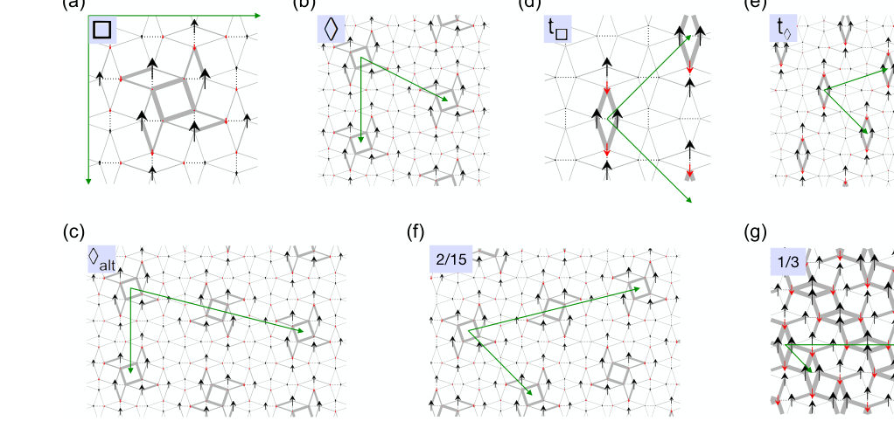
<figcaption class="paper-figure-caption"><b>Fig 1.</b> FIG. 1. Spin structures for the (a-e) 1/8, (f) 2/15, and (g) 1/3 plateaus obtained with different unit cells in iPEPS. The unit-cell vectors are indicated by the green arrows. The thickness of the gray inter-dimer J′ bonds scales with the local bond energy, where thicker bonds correspond to lower energy. Dotted lines denote the intra-dimer J bonds. The Supplementary Materials includes detailed information about the spin polarizations [36].</figcaption>
</figure>
<figure class="paper-figure-card">
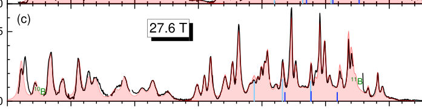
<figcaption class="paper-figure-caption"><b>Fig 2.</b> FIG. 3. 63,65Cu NMR spectra (black solid lines) recorded at 0.5 K in the applied magnetic field of (a) 41.9 T and at 0.05 K in the field of (b) 29.0 T and (c) 27.6 T K, corresponding respectively to the 1/3, 2/15 and 1/8 magnetization plateau. Red line/surface is the fit explained in the text and (b,c) include sextuplets with Hi = 0 T, with light (dark) blue lines corresponding to 63(65)Cu. The 10B and 11B labels denote the positions where the boron NMR signal is largely dominant (not shown).</figcaption>
</figure>
<figure class="paper-figure-card">
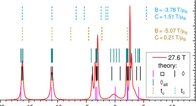
<figcaption class="paper-figure-caption"><b>Fig 3.</b> FIG. 4. Distribution of local fields obtained from the three 63,65Cu NMR spectra shown in Fig. 3 (solid lines) are com- pared to values obtained from numerical simulations (vertical bars) for the 1/3 (a), 2/15 (b), and 1/8 (c) plateau. Ex- cept for the 1/3 plateau, we obtained the best agreement by two-parameter fits that optimize the hyperfine fields B and C, see the text for details. For the 1/8 plateau, five different (color coded) predictions are shown: three based on pinwheels making a square (2) or rhomboidal (⋄, ⋄alt) unit cells and two based on extended triplets (t2, t⋄). The latter two fits, denoted by dashed lines, are clearly unsatisfactory and lead to nonphysical big B values,...</figcaption>
</figure>
</div>

<p><strong>Summary.</strong> This paper investigates the origin of magnetization plateaus in SrCu2(BO3)2 by synthesizing results from NMR and tensor-network simulations. The authors argue that low-field plateaus are best described by Wigner crystals of spin-2 bound states, a conclusion robustly supported by analyzing local magnetic fields measured via Cu and B NMR spectroscopy.</p>
<p><strong>Why it may be interesting.</strong> The work provides a concrete example of how combining high-field spectroscopy with advanced quantum simulation techniques can resolve fundamental structural puzzles in strongly correlated materials.</p>
<details>
<summary>Detailed structure</summary>
<p><strong>Main problem.</strong> The study aims to determine the microscopic origin of magnetization plateaus observed in SrCu2(BO3)2, particularly those at low fractions like 1/8 and 2/15, which defy standard theoretical explanations.</p>
<p><strong>Main result.</strong> NMR spectroscopy strongly supports a model where these plateaus are stabilized by Wigner crystals formed by spin-2 bound states (pinwheel structures), rather than simple crystal arrangements of triplets.</p>
<p><strong>Method.</strong> The research combines advanced numerical simulations using iPEPS with detailed experimental analysis of Cu and B nuclear magnetic resonance (NMR) spectra across multiple high magnetic fields.</p>
<p><strong>Model / system.</strong> The system is the layered antiferromagnet SrCu2(BO3)2, modeled by a 2D spin Hamiltonian on a Shastry-Sutherland lattice. The investigation probes local spin environments and magnetic superstructures responsible for quantized magnetization plateaus.</p>
<p><strong>Key observables.</strong> Local magnetic fields ($H_i$) derived from NMR spectra (Cu sextuplets), spin polarization histograms, and line splittings in B NMR spectra.</p>
<p><strong>Important parameters / regimes.</strong> Magnetization fractions (1/8, 2/15, 1/3); hyperfine coupling constants ($A, C, B$ for Cu; $A_1, A_2, A_3, A_4$ for B).</p>
<p><strong>Assumptions / limitations.</strong> The analysis relies on the assumption that NMR measurements accurately reflect local spin polarization and that specific magnetic stacking models (ABAB vs. ABC) can be distinguished by spectral features.</p>
<p><strong>Figures summary.</strong> Figures show iPEPS calculated spin structures, histograms comparing different spin configurations, raw Cu NMR spectra at various fields corresponding to plateaus, and plots detailing line splittings in B NMR versus spin polarization differences.</p>
<p><strong>Paper structure.</strong> The paper progresses from identifying the puzzle (unexplained plateaus) to applying multiple diagnostic tools: first, iPEPS simulations suggest Wigner crystals; second, Cu NMR constrains local fields using the 1/3 plateau; and third, detailed B NMR analysis distinguishes between competing magnetic stacking models (ABAB vs. ABC).</p>
</details>
<details>
<summary>Abstract</summary>
<p>The sequence of magnetization plateaus at 1/8, 2/15, 1/6, 1/4, 1/3, 2/5, and 1/2 of the saturation observed in SrCu$_2$(BO$_3$)$_2$ remained a puzzle until tensor-networks-based numerical simulations suggested that the low-magnetization plateaus are stabilized as Wigner crystals of spin-2 bound states, and not as one of the standard configurations (semiclassical up-down, or crystals of triplets). We report on $^{63,65}$Cu nuclear magnetic resonance spectra up to 41.9 T: Based on constraints deduced from the 1/3 plateau, we show that the spectra in the 1/8 and 2/15 plateaus indeed agree with the prediction for the spin-2 bound states, while being incompatible with a crystal of triplets. This adds the formation of Wigner crystals of bound states as an alternative fundamental paradigm in the theory of magnetization plateaus.</p>
</details>
<p><sub><a href="#top">↑ back to top</a></sub></p>

<p><a id="paper-2607.10765"></a></p>
<h3 id="spectral-gap-of-lee-yang-hamiltonians"><a href="http://arxiv.org/abs/2607.10765v1">Spectral gap of Lee-Yang Hamiltonians</a></h3>
<p><strong>Authors:</strong> Chaithanya Rayudu, Jun Takahashi<br>
<strong>Type:</strong> theory · <strong>Category:</strong> statistical mechanics · <strong>PDF:</strong> <a href="https://arxiv.org/pdf/2607.10765v1">https://arxiv.org/pdf/2607.10765v1</a><br>
<strong>Analysis basis:</strong> full PDF text, analyzed in chunks
<strong>Topic relevance:</strong> <code>Keldysh / 2PI / non-Gaussian methods</code> <strong>1/5</strong> · <code>analog quantum simulation</code> <strong>1/5</strong> · <code>driven-dissipative phase transition</code> <strong>1/5</strong> · <code>entanglement &amp; information structure</code> <strong>1/5</strong></p>
<div class="figure-strip-hint">↔ Scroll figures horizontally</div>
<div class="paper-figures-scroll">
<figure class="paper-figure-card">
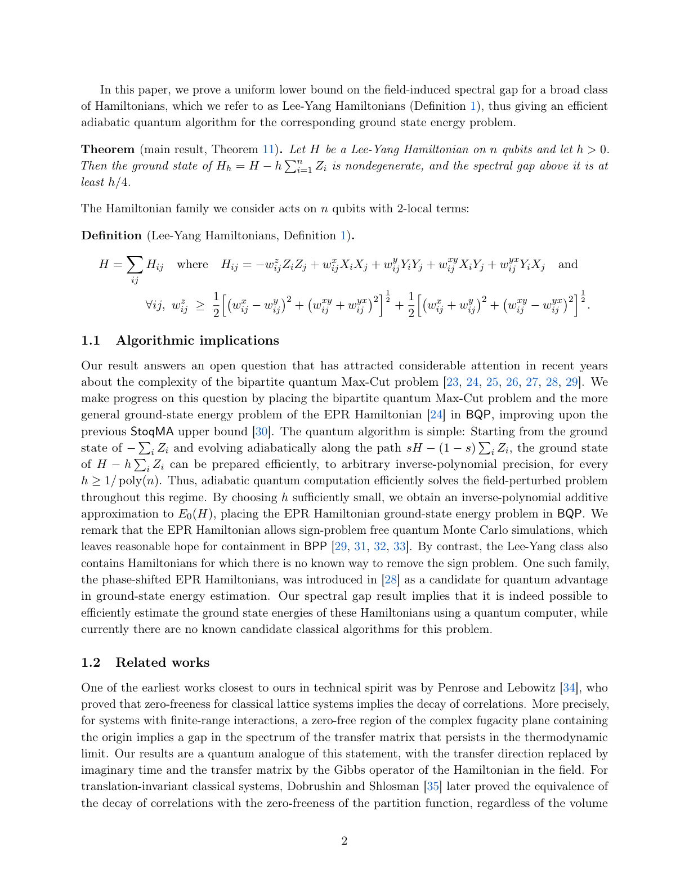
<figcaption class="paper-figure-caption"><b>Fig 1.</b> Low-resolution page preview, page 2</figcaption>
</figure>
<figure class="paper-figure-card">
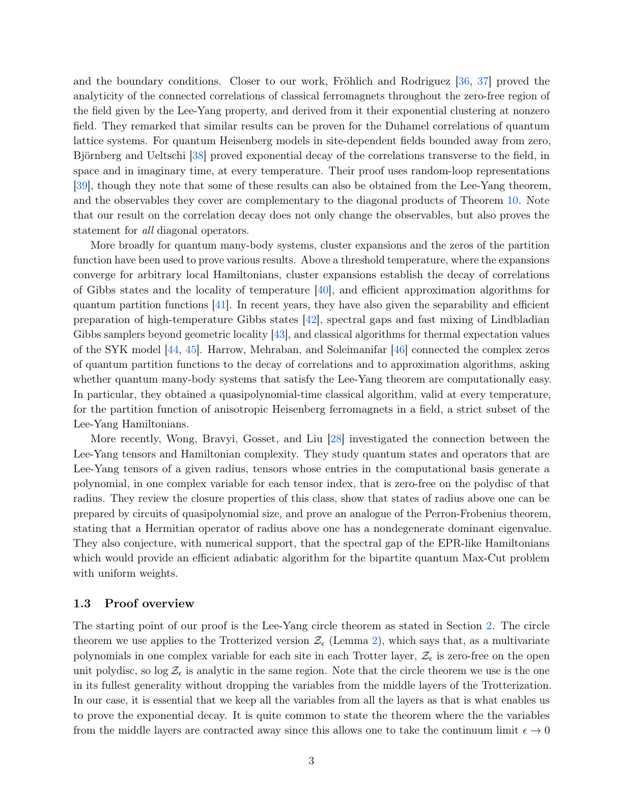
<figcaption class="paper-figure-caption"><b>Fig 2.</b> Low-resolution page preview, page 3</figcaption>
</figure>
<figure class="paper-figure-card">
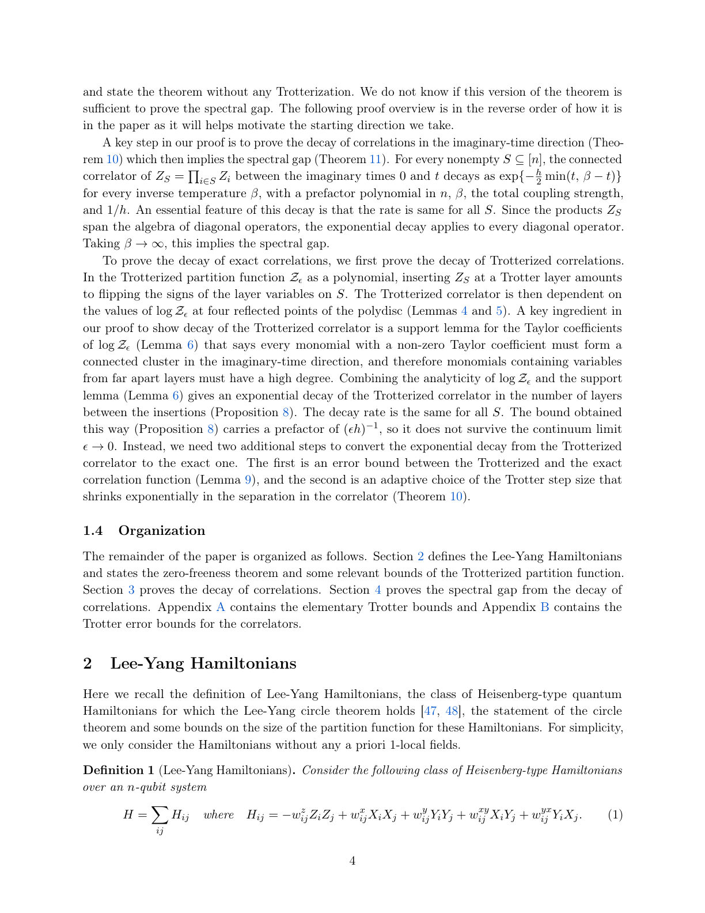
<figcaption class="paper-figure-caption"><b>Fig 3.</b> Low-resolution page preview, page 4</figcaption>
</figure>
<figure class="paper-figure-card">
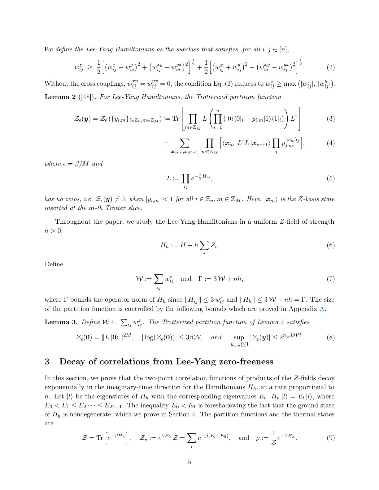
<figcaption class="paper-figure-caption"><b>Fig 4.</b> Low-resolution page preview, page 5</figcaption>
</figure>
<figure class="paper-figure-card">
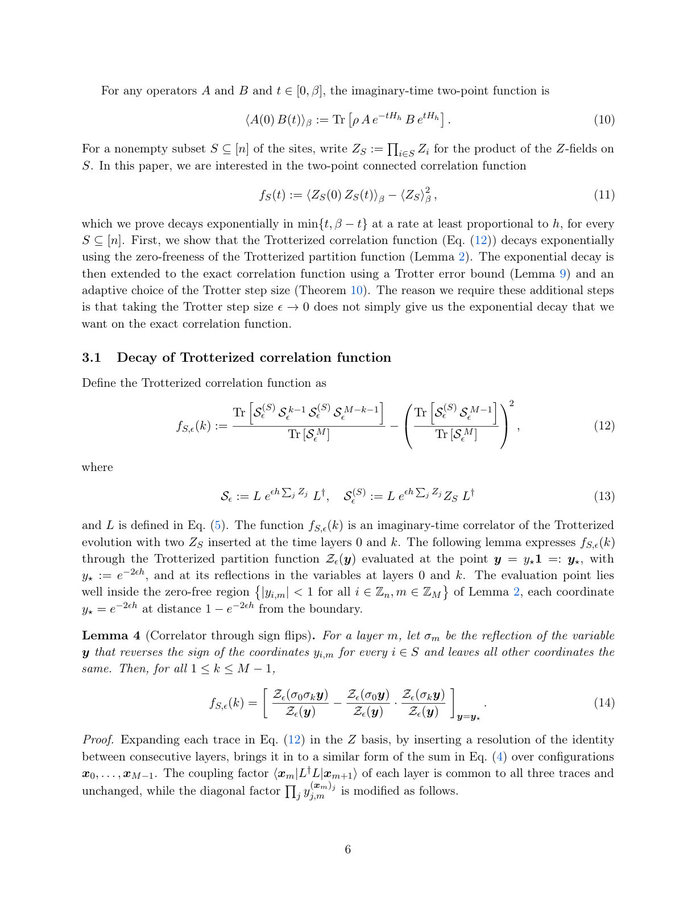
<figcaption class="paper-figure-caption"><b>Fig 5.</b> Low-resolution page preview, page 6</figcaption>
</figure>
</div>

<p><strong>Summary.</strong> This paper proves that Lee-Yang Hamiltonians possess a robust spectral gap proportional to the applied magnetic field strength. By leveraging the zero-freeness of their partition function, the authors establish exponential decay of imaginary-time correlations. This result is significant because it provides an efficient quantum algorithm for calculating ground state energies in this important class of models.</p>
<p><strong>Why it may be interesting.</strong> It provides a rigorous theoretical link between algebraic properties of partition functions (zero-free regions) and fundamental physical quantities like the spectral gap, which is crucial for understanding quantum phase transitions and computational complexity.</p>
<details>
<summary>Detailed structure</summary>
<p><strong>Main problem.</strong> The primary goal is proving a uniform lower bound on the spectral gap of Lee-Yang Hamiltonians when subjected to an external Z-field.</p>
<p><strong>Main result.</strong> The ground state energy exhibits a spectral gap of at least h/4, independent of system size or coupling strengths. This also yields a polynomial-time quantum algorithm for computing this energy.</p>
<p><strong>Method.</strong> The proof chains together results: establishing zero-freeness (Lee-Yang theorem) implies exponential decay of imaginary-time correlations, which in turn guarantees the spectral gap.</p>
<p><strong>Model / system.</strong> The study concerns Lee-Yang Hamiltonians acting on n qubits, perturbed by a uniform Z-field ($H_h = H - h \sum Z_i$). The analysis uses concepts from quantum statistical mechanics, including partition functions and imaginary-time evolution.</p>
<p><strong>Key observables.</strong> Spectral gap of the ground state energy; decay rate of two-point connected correlation functions $f_S(t)$.</p>
<p><strong>Important parameters / regimes.</strong> The external field strength $h$; system size $n$; inverse temperature $eta$.</p>
<p><strong>Assumptions / limitations.</strong> The proof critically relies on the zero-freeness property derived from the Lee-Yang theorem and careful error bounding when taking the continuum limit of Trotter approximations.</p>
<p><strong>Paper structure.</strong> The structure moves logically from establishing the necessary mathematical prerequisites (zero-freeness) to proving correlation decay via Trotterization bounds, culminating in the final spectral gap proof and algorithmic implication.</p>
</details>
<details>
<summary>Abstract</summary>
<p>The Lee-Yang theorem and its quantum extensions state that, for a broad class of Hamiltonians on any graph, the partition function's zeros in the complex magnetic field plane lie only on the imaginary axis. For these Hamiltonians, we prove that under a uniform Z-field of any strength h, the ground state has a spectral gap of at least h/4, independent of the system size and of the coupling strengths. The proof uses the zero-freeness of the partition function as given by Asano and Suzuki-Fisher to show exponential decay of the imaginary-time correlations for any product of Z-operators. Our result gives a polynomial-time quantum algorithm for computing the ground state energy of any Lee-Yang Hamiltonian.</p>
</details>
<p><sub><a href="#top">↑ back to top</a></sub></p>

<p><a id="paper-2607.10563"></a></p>
<h3 id="the-virtuous-cycle-of-quantum-classical-machine-learning"><a href="http://arxiv.org/abs/2607.10563v1">The Virtuous Cycle of Quantum-Classical Machine Learning</a></h3>
<p><strong>Authors:</strong> Nenad Tomašev, Jarrod R. McClean, Johannes Bausch<br>
<strong>Type:</strong> theory · <strong>Category:</strong> quantum information and computing · <strong>PDF:</strong> <a href="https://arxiv.org/pdf/2607.10563v1">https://arxiv.org/pdf/2607.10563v1</a><br>
<strong>Analysis basis:</strong> full PDF text, analyzed in chunks
<strong>Topic relevance:</strong> <code>Keldysh / 2PI / non-Gaussian methods</code> <strong>1/5</strong> · <code>driven-dissipative phase transition</code> <strong>1/5</strong> · <code>entanglement &amp; information structure</code> <strong>1/5</strong> · <code>methods for driven-dissipative</code> <strong>1/5</strong></p>
<div class="figure-strip-hint">↔ Scroll figures horizontally</div>
<div class="paper-figures-scroll">
<figure class="paper-figure-card">
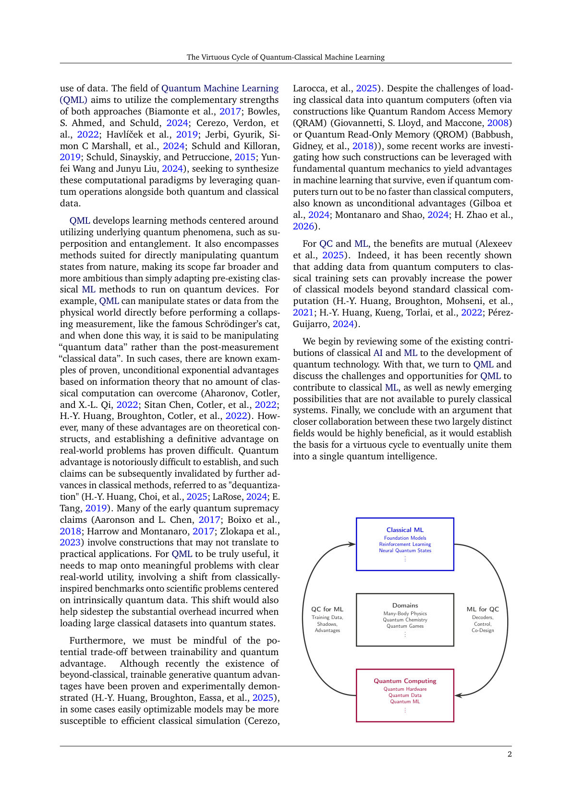
<figcaption class="paper-figure-caption"><b>Fig 1.</b> Low-resolution page preview, page 2</figcaption>
</figure>
<figure class="paper-figure-card">
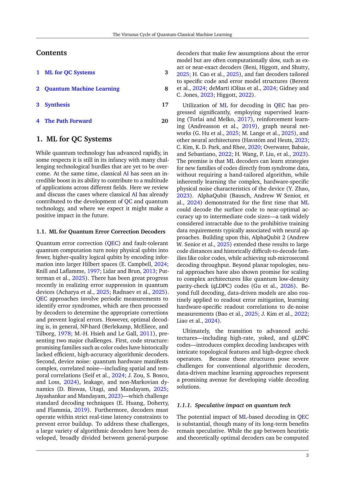
<figcaption class="paper-figure-caption"><b>Fig 2.</b> Low-resolution page preview, page 3</figcaption>
</figure>
<figure class="paper-figure-card">
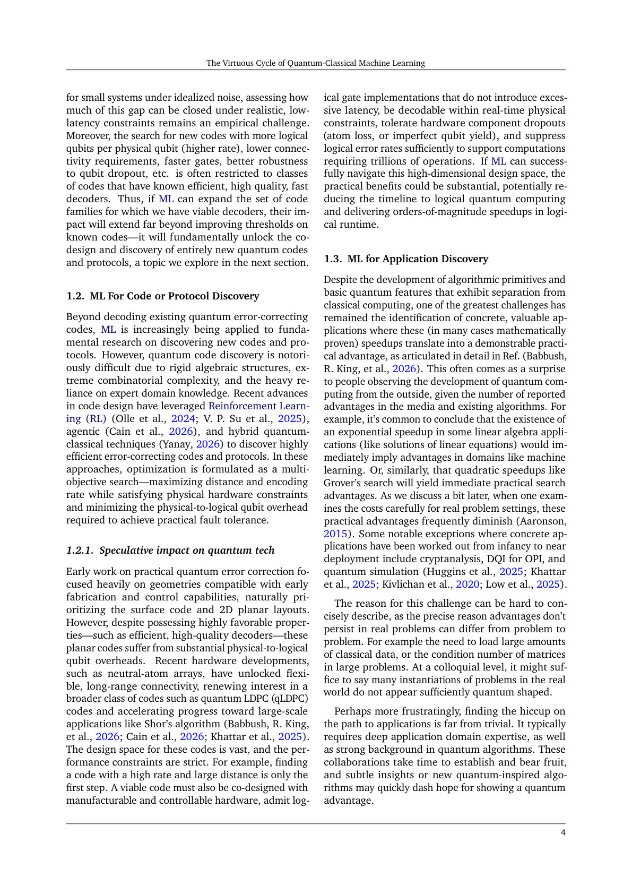
<figcaption class="paper-figure-caption"><b>Fig 3.</b> Low-resolution page preview, page 4</figcaption>
</figure>
<figure class="paper-figure-card">
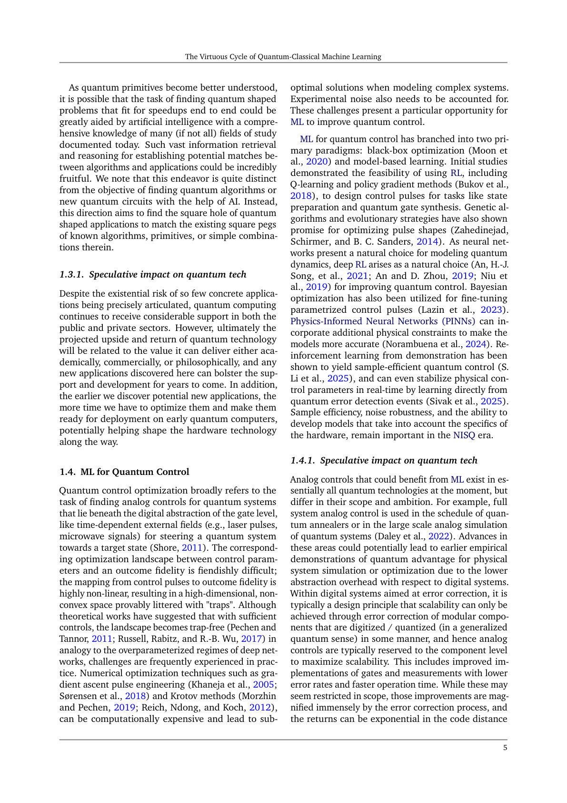
<figcaption class="paper-figure-caption"><b>Fig 4.</b> Low-resolution page preview, page 5</figcaption>
</figure>
<figure class="paper-figure-card">
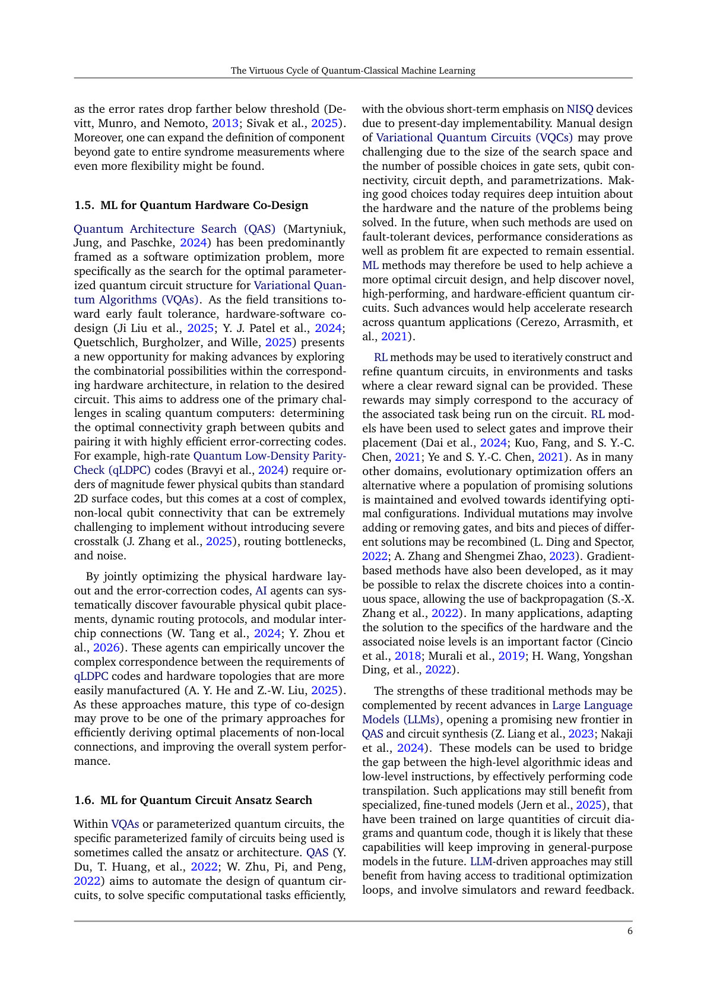
<figcaption class="paper-figure-caption"><b>Fig 5.</b> Low-resolution page preview, page 6</figcaption>
</figure>
</div>

<p><strong>Summary.</strong> This paper surveys the rapidly growing intersection between classical Machine Learning and Quantum Computing. It highlights how ML can solve computationally hard problems in Quantum Error Correction (QEC) and assist in designing better quantum codes and control pulses. Ultimately, it posits that this mutual benefit will drive significant advancements across both fields.</p>
<p><strong>Why it may be interesting.</strong> The deep integration of ML into fundamental aspects of QC, such as decoding and optimization, provides new computational tools that could be adapted to analyze complex dynamics in open quantum systems or model noise sources.</p>
<details>
<summary>Detailed structure</summary>
<p><strong>Main problem.</strong> The paper reviews the mutual opportunities between classical machine learning (ML) and quantum computation, aiming to accelerate scientific discovery in both fields.</p>
<p><strong>Main result.</strong> It argues for a 'virtuous cycle' where ML can significantly aid Quantum Error Correction (QEC) decoding, code discovery, and optimizing quantum control protocols.</p>
<p><strong>Method.</strong> The review synthesizes multiple advanced techniques, including using supervised/reinforcement learning for NP-hard QEC decoding problems and applying variational algorithms to quantum simulations.</p>
<p><strong>Model / system.</strong> The focus spans general quantum computing platforms, specifically addressing the challenges of fault tolerance via Quantum Error Correction (QEC) codes like surface or color codes. It also covers applications in simulating complex physical systems.</p>
<p><strong>Key observables.</strong> Decoding accuracy, logical error rates, decoding throughput, and fidelity of outcome vs. control parameters are key diagnostics discussed.</p>
<p><strong>Important parameters / regimes.</strong> Real-time latency constraints for decoding, the overhead ratio (physical to logical qubits), and noise characteristics (correlated, spatial, temporal) are critical limitations.</p>
<p><strong>Assumptions / limitations.</strong> The primary assumption is that ML techniques can effectively learn complex error correction strategies or optimize quantum control parameters better than current heuristic methods.</p>
<p><strong>Paper structure.</strong> The structure follows a comprehensive review, first detailing the role of ML in QEC decoding (Chunk 1), then expanding on advanced applications like code discovery and quantum control using RL/ML (Chunk 2), and finally surveying the breadth of related literature covering QML techniques across various physical problems (Chunks 3 &amp; 4).</p>
</details>
<details>
<summary>Abstract</summary>
<p>Artificial intelligence and quantum computing have both seen tremendous progress in recent years, opening up new avenues for accelerating scientific discovery. Classical machine learning has already proven to be useful for addressing challenges in quantum computation; and hardware progress is well underway towards the early fault-tolerant regime. On the other hand, the emerging field of quantum machine learning is aimed at utilizing the strengths of both computational paradigms, via the development of learning algorithms or models that benefit from running on quantum devices or from training on quantum data. We therefore argue that both of these paradigms stand to benefit substantially from each other. Here we review the most salient opportunities for machine learning in quantum computing, hoping to inspire a virtuous cycle through which both fields can mutually benefit.</p>
</details>
<p><sub><a href="#top">↑ back to top</a></sub></p>

<p><a id="paper-2607.10506"></a></p>
<h3 id="learning-from-noise-effective-rank-collapse-and-out-of-distribution-rejection-in-restricted-boltzmann-machines"><a href="http://arxiv.org/abs/2607.10506v1">Learning from Noise: Effective-Rank Collapse and Out-of-Distribution Rejection in Restricted Boltzmann Machines</a></h3>
<p><strong>Authors:</strong> Oshada Rathnayake, Nikhil Shukla<br>
<strong>Type:</strong> theory · <strong>Category:</strong> disordered systems and neural networks · <strong>PDF:</strong> <a href="https://arxiv.org/pdf/2607.10506v1">https://arxiv.org/pdf/2607.10506v1</a><br>
<strong>Analysis basis:</strong> full PDF text, analyzed in chunks
<strong>Topic relevance:</strong> <code>Keldysh / 2PI / non-Gaussian methods</code> <strong>1/5</strong> · <code>driven-dissipative phase transition</code> <strong>1/5</strong> · <code>entanglement &amp; information structure</code> <strong>1/5</strong></p>
<div class="figure-strip-hint">↔ Scroll figures horizontally</div>
<div class="paper-figures-scroll">
<figure class="paper-figure-card">

<figcaption class="paper-figure-caption"><b>Fig 1.</b> FIG. 1: Comparison of the digit classification and out- of-distribution (OOD) rejection performance of an RBM trained exclusively on MNIST [13] and an RBM trained on MNIST + random binary images. Panels (a) and (b) show the digit classification accuracy on the MNIST test set, demonstrating comparable in-distribution per- formance for both models. Panels (c) and (d) show the OOD rejection performance on the KMNIST dataset [14]. Unlike the conventional RBM, the auxiliary-trained RBM successfully assigns the majority of OOD samples to the rejection class while preserving its digit classifica- tion performance.</figcaption>
</figure>
<figure class="paper-figure-card">
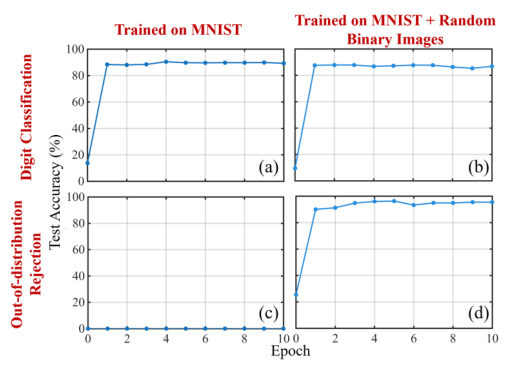
<figcaption class="paper-figure-caption"><b>Fig 2.</b> Fig. 1(d), this training protocol enables the RBM to as- sign OOD inputs to the rejection class, while preserving the in-distribution digit-classification performance shown in Fig. 1(b). The central objective of this work to provide insight to the aforementioned behavior of RBMs through the effec- tive interactions induced by the hidden layer. Since the RBM has no direct visible–visible couplings, correlations among visible units are mediated through the visible–</figcaption>
</figure>
<figure class="paper-figure-card">
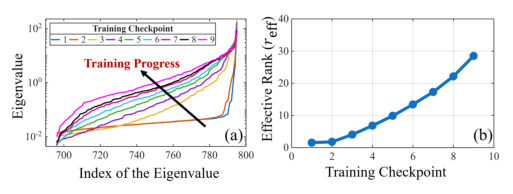
<figcaption class="paper-figure-caption"><b>Fig 3.</b> FIG. 2: (a) Eigenvalue spectra of J = WW T , with the indices of the eigenvalues, sorted in descending order, at training checkpoints, which are selected when the model reaches training accuracies between 10% and 90% in 10% increments, with training accuracy monitored after each parameter update (60,000 updates per epoch). The evo- lution of the spectrum illustrates the progressive distribu- tion of spectral weight during learning. (b) Correspond- ing evolution of the effective rank (reff) of J = WW T</figcaption>
</figure>
<figure class="paper-figure-card">
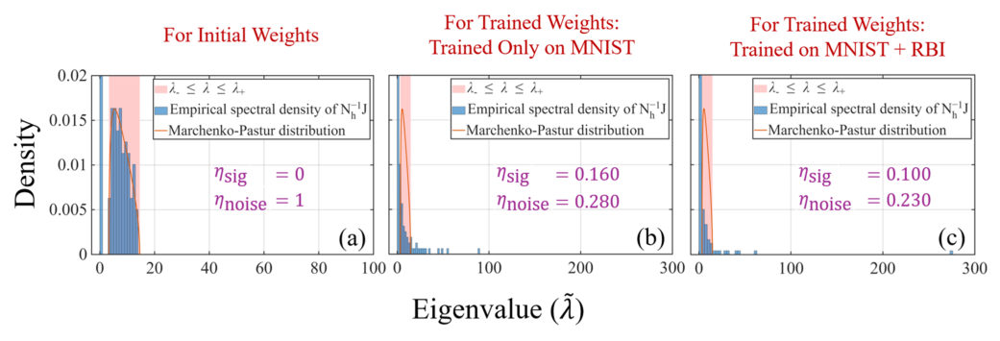
<figcaption class="paper-figure-caption"><b>Fig 4.</b> FIG. 3: Comparison between the Marchenko–Pastur distribution and the empirical spectral density of N−1 h J cor- responding to (a) the randomly initialized initial weight matrix, (b) the learned weight matrix of the RBM trained exclusively on MNIST data, and (c) the learned weight matrix of the RBM trained on both MNIST and random binary images. Inclusion of auxiliary data yields fewer eigenvalues beyond and within the Marchenko–Pastur bulk, indicating a reduction in informative-feature-dominated directions as well as noise-dominated directions leading to the rank collapse. For clarity, the vertical axis is truncated, and the full heights of the truncated bars are 0.874 in (a), 0.465 in (b),...</figcaption>
</figure>
<figure class="paper-figure-card">
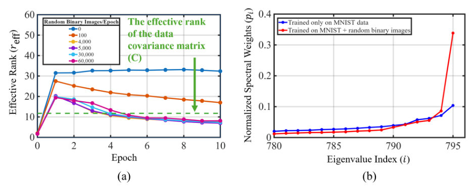
<figcaption class="paper-figure-caption"><b>Fig 5.</b> FIG. 4: (a) Evolution of the effective rank of J = WW T during training for different numbers of random binary images incorporated per epoch. The case labeled (0) corresponds to the RBM trained exclusively on MNIST data, whereas all other cases correspond to RBMs trained on both MNIST data and random binary images. (b) Comparison of normalized spectral weights of eigendirections of J obtained after training with the two different methods.</figcaption>
</figure>
</div>

<p><strong>Summary.</strong> This paper analyzes how Restricted Boltzmann Machines fail when presented with Out-of-Distribution data. By augmenting the training set with random noise, the model undergoes an 'effective-rank collapse' in its learned weight structure. This spectral reorganization successfully forces the model to reject OOD inputs while maintaining high accuracy on known data.</p>
<p><strong>Why it may be interesting.</strong> The work provides a rigorous mathematical framework linking information geometry (spectral rank) to generalization performance in deep learning models, which has parallels with understanding effective dimensionality in complex quantum many-body systems.</p>
<details>
<summary>Detailed structure</summary>
<p><strong>Main problem.</strong> Restricted Boltzmann Machines (RBMs) used for classification are fragile under Out-of-Distribution (OOD) inputs, tending to absorb novel samples into learned class basins instead of rejecting them.</p>
<p><strong>Main result.</strong> Training the RBM with auxiliary random binary images causes an 'effective-rank collapse' in the visible-visible interaction matrix J. This reorganization successfully enhances OOD rejection capability without degrading performance on in-distribution data.</p>
<p><strong>Method.</strong> The analysis uses spectral properties of the induced weight matrix $J=WW^T$, quantified by an entropy-based effective rank ($   ext{reff}$), and examines the free energy landscape to diagnose structural changes.</p>
<p><strong>Model / system.</strong> The model is a Restricted Boltzmann Machine (RBM) defined over visible and hidden configurations. The analysis focuses on the spectral properties of the induced interaction matrix $J = WW^T$, comparing training protocols using only in-distribution data (MNIST) versus augmented data including random binary images.</p>
<p><strong>Key observables.</strong> Effective rank ($  ext{reff}$), eigenvalue spectrum of $J$, OOD rejection accuracy, and free energy landscape $F(v_x, v_y)$.</p>
<p><strong>Important parameters / regimes.</strong> The ratio of spectral weight to the Marchenko–Pastur reference, number of Gibbs sampling steps ($k$), and hidden layer size ($N_h$).</p>
<p><strong>Assumptions / limitations.</strong> The failure mode is structural and related to the spectral properties of $J$; $ ext{reff}$ is used as a robust measure of effective dimensionality.</p>
<p><strong>Figures summary.</strong> Figures compare eigenvalue spectra evolution (Fig. 2) showing rank growth vs. collapse, free energy landscapes (Fig. 6) showing OOD samples shifting toward rejection basins, and performance metrics across different training protocols (Figs. 1, 3).</p>
<p><strong>Paper structure.</strong> The paper systematically analyzes the spectral properties of RBMs trained on in-distribution data versus augmented data. It first establishes the failure mode using spectral analysis ($  ext{reff}$), then uses free energy calculations to show landscape reorganization, and finally confirms robustness across varying training parameters like $k$ (CD steps).</p>
</details>
<details>
<summary>Abstract</summary>
<p>Restricted Boltzmann machines (RBMs) represent data by shaping an energy landscape over visible and hidden configurations, but their discriminative use is fragile under out-of-distribution (OOD) inputs: samples outside the training distribution can be absorbed into one of the learned class basins rather than rejected. Here, we analyze this failure mode through the spectrum of the induced visible--visible interaction $J=WW^{T}$, where \(W\) is the visible--hidden weight matrix. Relative to a Marchenko--Pastur random-matrix reference, conventional training spreads spectral weight into many weak, bulk-compatible directions, increasing the effective rank of $J$. When auxiliary random binary images are assigned to a rejection label during training, the learned interaction undergoes effective-rank collapse: weak bulk-like modes are depleted, spectral weight concentrates into fewer dominant eigendirections, and the effective rank of $J$ approaches that of the empirical data covariance matrix. The resulting RBM rejects structured OOD image datasets while preserving MNIST classification accuracy, showing that random auxiliary exposure can reshape both the interaction spectrum and the free-energy landscape of an energy-based classifier.</p>
</details>
<p><sub><a href="#top">↑ back to top</a></sub></p>

<p><a id="paper-2607.09905"></a></p>
<h3 id="when-classical-baselines-are-tuned-as-carefully-as-the-quantum-model-does-quantum-reservoir-computing-still-win"><a href="http://arxiv.org/abs/2607.09905v1">When Classical Baselines Are Tuned as Carefully as the Quantum Model, Does Quantum Reservoir Computing Still Win?</a></h3>
<p><strong>Authors:</strong> Tushar Pandey<br>
<strong>Type:</strong> theory · <strong>Category:</strong> disordered systems and neural networks · <strong>PDF:</strong> <a href="https://arxiv.org/pdf/2607.09905v1">https://arxiv.org/pdf/2607.09905v1</a><br>
<strong>Analysis basis:</strong> full PDF text, analyzed in chunks
<strong>Topic relevance:</strong> <code>analog quantum simulation</code> <strong>1/5</strong> · <code>methods for driven-dissipative</code> <strong>1/5</strong> · <code>non-equilibrium dynamics</code> <strong>1/5</strong></p>
<div class="figure-strip-hint">↔ Scroll figures horizontally</div>
<div class="paper-figures-scroll">
<figure class="paper-figure-card">
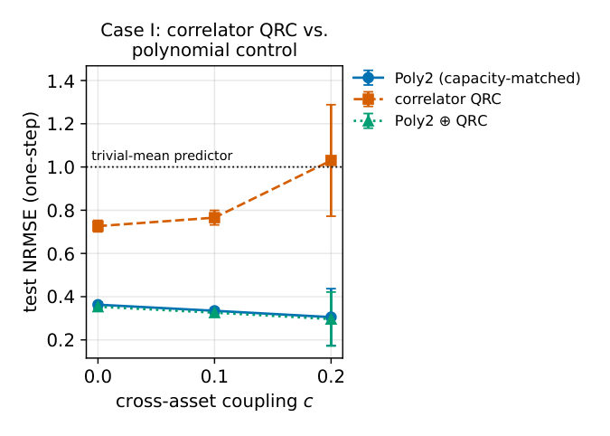
<figcaption class="paper-figure-caption"><b>Fig 1.</b> Figure 1: Case study I. One-step test NRMSE versus cross-asset coupling c for the correlator QRC, the capacity-matched degree-2 polynomial (Poly2), and their concatenation Poly2 ⊕ QRC. The polynomial control is below the QRC at every coupling, and the concatenation tracks Poly2 almost exactly, so adding the quantum features changes nothing of substance. The dotted line marks the trivial-mean predictor (NRMSE = 1).</figcaption>
</figure>
<figure class="paper-figure-card">
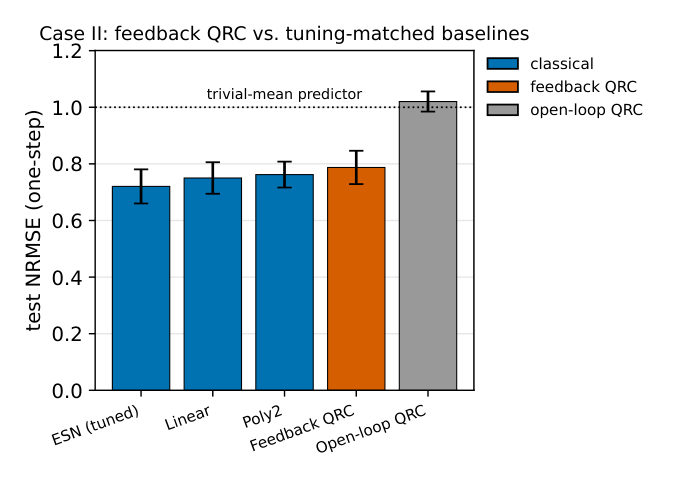
<figcaption class="paper-figure-caption"><b>Fig 2.</b> Figure 2: Case study II. One-step test NRMSE at psw = 0.05 (mean ± s.d. over 10 × 10 seeds). Closing the feedback loop rescues the useless open-loop reservoir (rightmost) to predictive performance, but the tuning-matched ESN and even a plain linear model remain ahead of the feedback QRC. Blue bars are classical; the dotted line is the trivial-mean predictor.</figcaption>
</figure>
</div>

<p><strong>Summary.</strong> This paper challenges the prevailing narrative that quantum reservoirs inherently outperform classical predictors. By rigorously tuning classical baselines to match the capacity and effort given to the quantum model, the authors demonstrate that for small systems on specific tasks, the purported quantum advantage vanishes or is significantly diminished.</p>
<p><strong>Why it may be interesting.</strong> It provides a critical, reproducible checklist for benchmarking quantum machine learning models by enforcing strict fairness criteria against established classical benchmarks in the context of complex dynamical systems.</p>
<details>
<summary>Detailed structure</summary>
<p><strong>Main problem.</strong> The study investigates whether Quantum Reservoir Computing (QRC) maintains a predictive advantage over classical methods when the classical competitor is given an equal level of tuning effort and model capacity.</p>
<p><strong>Main result.</strong> In fair, matched comparisons across two tested mechanisms (correlator readout and feedback loop), the quantum advantage disappears; in fact, well-tuned classical networks often predict slightly more accurately than QRC.</p>
<p><strong>Method.</strong> The authors used exact simulations on small quantum systems to compare QRC performance against capacity-matched polynomial models using prediction tasks like forecasting coupled Hénon maps.</p>
<p><strong>Model / system.</strong> The quantum reservoir is modeled by a transverse-field Ising Hamiltonian ($H = \sum_{i<j} J_{ij} X_i X_j + v \sum_i Z_i$) simulated up to 11 qubits. Comparisons are made against classical polynomial models and Echo-State Networks (ESNs).</p>
<p><strong>Key observables.</strong> Normalized Root-Mean-Square Error (NRMSE) and Mean Directional Accuracy (MDA) for prediction tasks.</p>
<p><strong>Important parameters / regimes.</strong> System size ($  ext{q} \le 11$ qubits); coupling strength ($c$) in Hénon maps; feedback strength parameter ($k_{fb}$).</p>
<p><strong>Assumptions / limitations.</strong> The comparison is limited to small quantum systems and specific, well-defined prediction tasks, requiring a 'fair' matching of classical tuning effort and capacity.</p>
<p><strong>Figures summary.</strong> Figure 1 shows NRMSE vs. coupling $c$ comparing $ ext{Poly}2$, QRC, and their concatenation; Figure 2 compares open-loop vs. feedback QRC performance across switching rates ($  ext{psw}$), showing ESN beating Feedback QRC.</p>
<p><strong>Paper structure.</strong> The paper systematically tests two distinct advantages of QRC—correlator readout (Case I) and feedback loops (Case II)—by comparing them against state-of-the-art, carefully tuned classical baselines using rigorous evaluation harnesses.</p>
</details>
<details>
<summary>Abstract</summary>
<p>Can a small quantum computer forecast a changing signal better than an ordinary classical method? Many studies say yes, but the classical methods they compare against are often left in a basic, untuned state while the quantum model is carefully optimised. We ask what happens when the classical competitor is given exactly the same care: the same size and the same amount of tuning effort. We study two popular reasons a quantum reservoir is thought to help, using exact simulations of small quantum systems (up to eleven qubits) on prediction tasks. In both cases the quantum advantage disappears once the comparison is fair. In the first, extra quantum measurements add nothing that a simple classical formula of the same size does not already provide. In the second, a feedback loop genuinely helps the quantum model, turning a useless setup into a working predictor, yet a well-tuned classical network still predicts slightly more accurately, and the gap is statistically reliable. Our point is not that quantum reservoirs can never win, but that two of their commonly cited advantages do not hold up against fair classical competitors at this scale. We provide these matched comparisons as a simple, reusable checklist for honest benchmarking. All results are fully reproducible from fixed random seeds.</p>
</details>
<p><sub><a href="#top">↑ back to top</a></sub></p>

<p><a id="paper-2607.11406"></a></p>
<h3 id="ab-initio-path-integral-monte-carlo-study-of-the-2d-uniform-electron-liquid-at-finite-temperatures"><a href="http://arxiv.org/abs/2607.11406v1">Ab initio path integral Monte Carlo study of the 2D uniform electron liquid at finite temperatures</a></h3>
<p><strong>Authors:</strong> Tobias Dornheim, Fotios Kalkavouras, Paul Hamann, Zhandos A. Moldabekov, Jan Vorberger, Panagiotis Tolias<br>
<strong>Type:</strong> theory · <strong>Category:</strong> strongly correlated electrons · <strong>PDF:</strong> <a href="https://arxiv.org/pdf/2607.11406v1">https://arxiv.org/pdf/2607.11406v1</a><br>
<strong>Analysis basis:</strong> full PDF text, analyzed in chunks
<strong>Topic relevance:</strong> <code>Keldysh / 2PI / non-Gaussian methods</code> <strong>1/5</strong> · <code>methods for driven-dissipative</code> <strong>1/5</strong></p>
<div class="figure-strip-hint">↔ Scroll figures horizontally</div>
<div class="paper-figures-scroll">
<figure class="paper-figure-card">
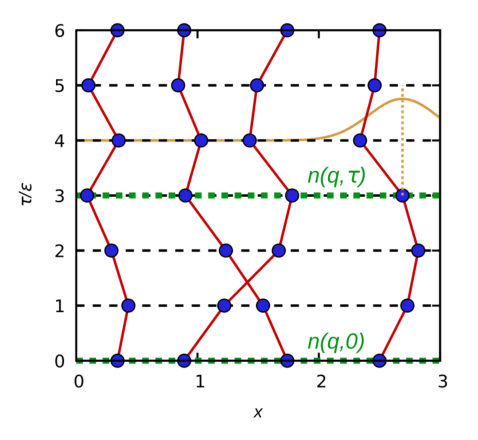
<figcaption class="paper-figure-caption"><b>Fig 1.</b> FIG. 1. Schematic illustration of a PIMC configuration of N = 4 electrons in the τ-x-plane. The yellow Gaussian on the right illustrates the free (kinetic) imaginary-time propagator [Eq. (8)] and the two horizontal dashed green lines illustrate the estimation of the ITCF F(q, τ) [Eq. (14)] within PIMC. Adopted from Ref.[74] with the permission of the authors.</figcaption>
</figure>
<figure class="paper-figure-card">
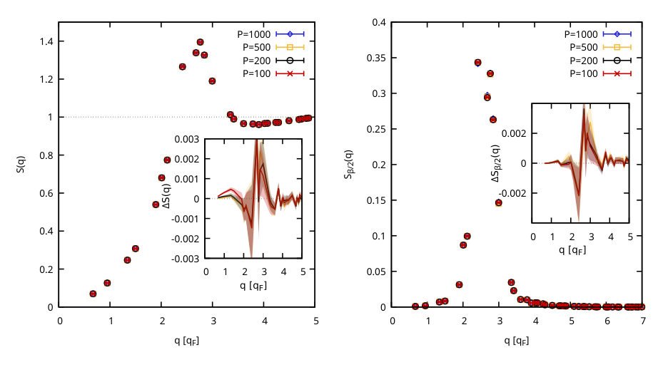
<figcaption class="paper-figure-caption"><b>Fig 2.</b> FIG. 2. The PIMC convergence with the number of imaginary-time propagators P for the 2DEG at rs = 30 and Θ = 0.5 with N = 14. Left: static structure factor S(q) for P = 1000 (blue diamonds), P = 500 (yellow squares), P = 200 (black circles) and P = 100 (red crosses). The inset shows the differences with the reference results for P = 1000. Right: same but for the thermal structure factor Sβ/2(q) = F(q, β/2).</figcaption>
</figure>
<figure class="paper-figure-card">
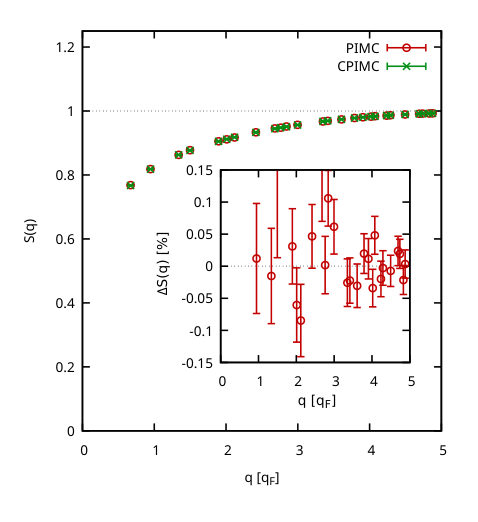
<figcaption class="paper-figure-caption"><b>Fig 3.</b> FIG. 3. The static structure factor S(q) of the 2DEG at rs = 0.5 and Θ = 4, with N = 14 electrons. Red circles: standard PIMC results for P = 200; green crosses: configuration PIMC results [150]. The inset shows the relative difference between the two data sets.</figcaption>
</figure>
<figure class="paper-figure-card">
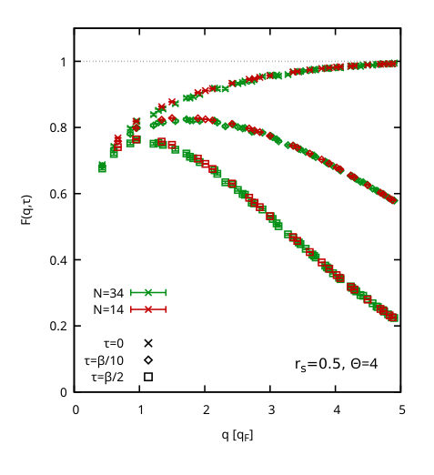
<figcaption class="paper-figure-caption"><b>Fig 4.</b> FIG. 4. Wavenumber dependence of different ITCF F(q, τ) τ−slices for τ = 0 (crosses), τ = β/10 (diamonds) and τ = β/2 (squares). PIMC results for the 2DEG at rs = 0.5 and Θ = 4. The green and red colors distinguish simulation results with N = 34 and N = 14 electrons, respectively.</figcaption>
</figure>
<figure class="paper-figure-card">
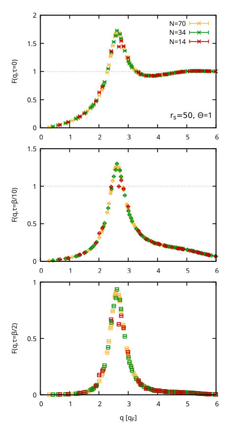
<figcaption class="paper-figure-caption"><b>Fig 5.</b> FIG. 5. Wavenumber dependence of different ITCF F(q, τ) τ−slices for τ = 0 (crosses), τ = β/10 (diamonds) and τ = β/2 (squares). PIMC results for the 2DEG at rs = 50 and Θ = 1. The yellow, green and red colors distinguish simulation results with N = 70, N = 34 and N = 14 electrons, respectively.</figcaption>
</figure>
</div>

<p><strong>Summary.</strong> This work performs extensive Path Integral Monte Carlo simulations on the 2D uniform electron gas across wide ranges of density and temperature. By analyzing the imaginary-time correlation function, the authors report finding a roton-type feature indicative of strong electronic correlations. The results are designed to rigorously test and improve theoretical models describing quantum liquid behavior.</p>
<p><strong>Why it may be interesting.</strong> While focused on electron liquids, the rigorous application of advanced Monte Carlo techniques (PIMC) to study emergent collective modes (rotons) provides valuable methodological insights applicable to strongly correlated quantum systems in general.</p>
<details>
<summary>Detailed structure</summary>
<p><strong>Main problem.</strong> To analyze the structural, linear density response, and spectral properties of the two-dimensional uniform electron liquid (2DEG) at finite temperatures.</p>
<p><strong>Main result.</strong> The study finds clear evidence of a roton-type feature in the dynamic structure factor at strong coupling and intermediate wavenumbers. These PIMC results serve to benchmark existing theories for the 2DEG.</p>
<p><strong>Method.</strong> Ab initio Path Integral Monte Carlo (PIMC) simulations are used extensively, analyzing the imaginary-time density–density correlation function (ITCF).</p>
<p><strong>Model / system.</strong> The physical system is the two-dimensional uniform electron gas (2DEG), treated as a quantum many-body system in the jellium approximation. The simulation covers a wide range of densities ($r_s=0.1$ to $50$) and temperatures ($\Theta=0.5$ to $16$).</p>
<p><strong>Key observables.</strong> Static structure factor S(q), static linear density response $\chi(q)$, and the imaginary-time density–density correlation function F(q, $\tau$).</p>
<p><strong>Important parameters / regimes.</strong> Density parameter $r_s$, temperature ratio $\Theta = k_BT/E_{Fermi}$, and momentum transfer $q$.</p>
<p><strong>Assumptions / limitations.</strong> The analysis avoids the exponentially ill-conditioned analytic continuation problem by working directly in the imaginary-time domain. The fermionic nature requires specialized sampling techniques to handle the sign problem.</p>
<p><strong>Figures summary.</strong> Figure 1 schematically illustrates a PIMC configuration in the $\tau$-$x$-plane, showing the free propagator and the estimation of F(q, $\tau$).</p>
<p><strong>Paper structure.</strong> The paper details the use of PIMC to calculate correlation functions by working in imaginary time. It presents results across various density and temperature regimes, focusing on identifying collective excitations like the roton feature.</p>
</details>
<details>
<summary>Abstract</summary>
<p>We present extensive \emph{ab initio} path integral Monte Carlo (PIMC) simulations of the two-dimensional uniform electron gas (2DEG), covering a broad range of density parameters $r_s=0.1,\dots,50$ and temperatures $Θ=k_\textnormal{B}T/E_\textnormal{Fermi}=0.5,\dots,16$. This allows us to analyze various structural, linear density response and spectral properties. We find clear evidence of a \emph{roton-type} feature in the dynamic structure factor at strong coupling and intermediate wavenumbers. We also benchmark novel dielectric theory implementations for the 2DEG~[Kalkavouras \emph{et al.}~arXiv:2601.14989] for structural and spectral properties across the liquid phase diagram. The PIMC results can be used to benchmark existing theories and approximations, and guide the development of new methodologies.</p>
</details>
<p><sub><a href="#top">↑ back to top</a></sub></p>

<p><a id="paper-2607.10867"></a></p>
<h3 id="groupfunctionsjl-computing-individual-entries-of-the-irreducible-representations-of-the-unitary-group-ud"><a href="http://arxiv.org/abs/2607.10867v1">GroupFunctions.jl: computing individual entries of the irreducible representations of the unitary group U(d)</a></h3>
<p><strong>Authors:</strong> David Amaro-Alcalá, Konrad Szymański<br>
<strong>Type:</strong> theory · <strong>Category:</strong> quantum information and computing · <strong>PDF:</strong> <a href="https://arxiv.org/pdf/2607.10867v1">https://arxiv.org/pdf/2607.10867v1</a><br>
<strong>Analysis basis:</strong> full PDF text, analyzed in chunks
<strong>Topic relevance:</strong> <code>analog quantum simulation</code> <strong>1/5</strong> · <code>correlated cavity matter</code> <strong>1/5</strong></p>
<div class="figure-strip-hint">↔ Scroll figures horizontally</div>
<div class="paper-figures-scroll">
<figure class="paper-figure-card">
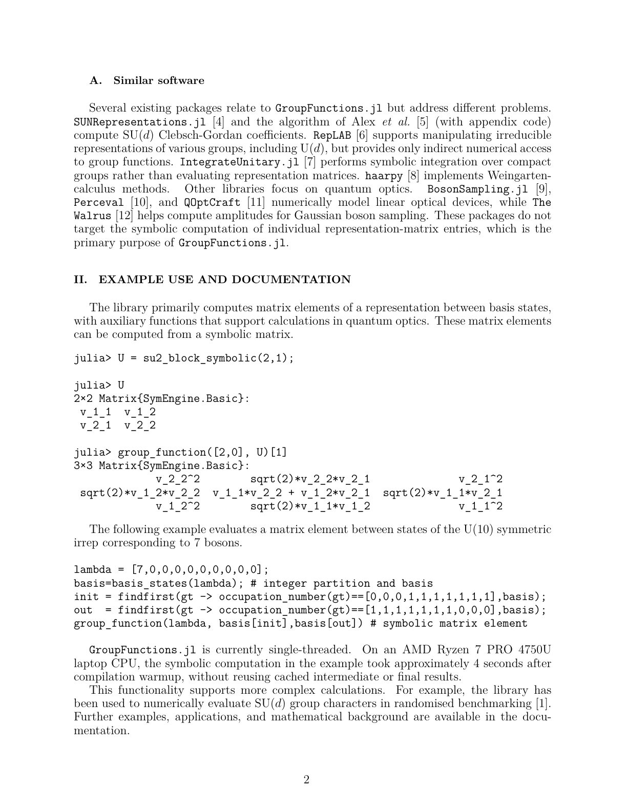
<figcaption class="paper-figure-caption"><b>Fig 1.</b> Low-resolution page preview, page 2</figcaption>
</figure>
<figure class="paper-figure-card">
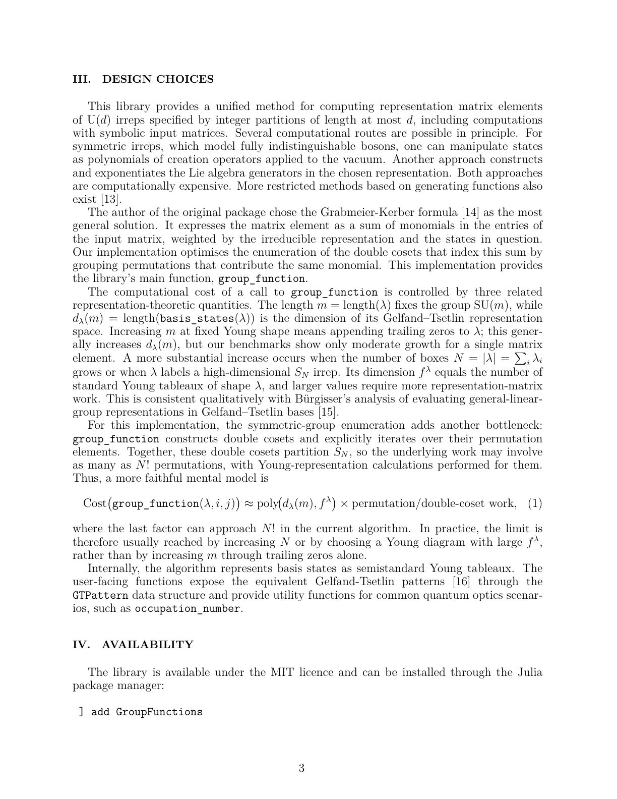
<figcaption class="paper-figure-caption"><b>Fig 2.</b> Low-resolution page preview, page 3</figcaption>
</figure>
<figure class="paper-figure-card">
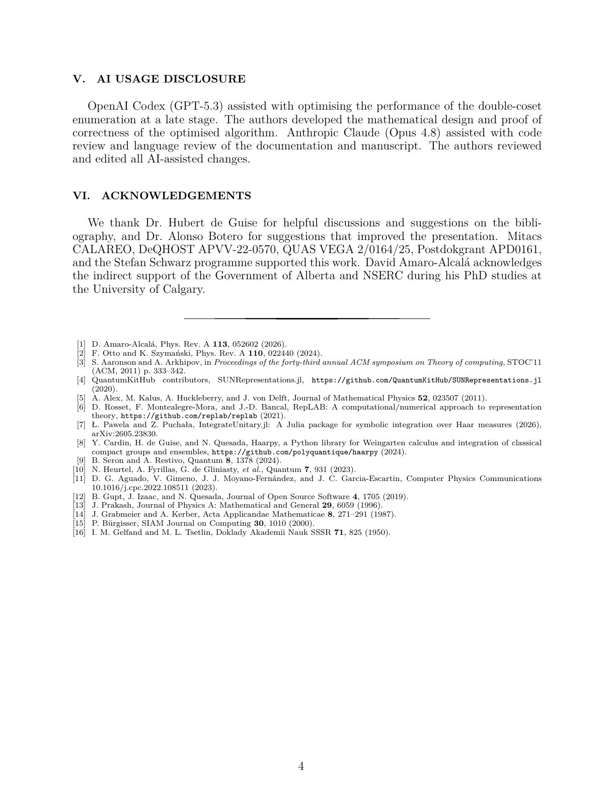
<figcaption class="paper-figure-caption"><b>Fig 3.</b> Low-resolution page preview, page 4</figcaption>
</figure>
</div>

<p><strong>Summary.</strong> This paper presents GroupFunctions.jl, a Julia library designed to compute individual matrix elements of irreducible representations of the unitary group U(d). It provides both symbolic and numerical methods using Gelfand-Tsetlin patterns, which is crucial for analyzing transition amplitudes in quantum optics and related fields. The tool significantly streamlines calculations compared to assembling full representation matrices.</p>
<p><strong>Why it may be interesting.</strong> Since quantum optics and photonic QI often involve calculating transition amplitudes or overlaps between complex states (which are governed by unitary transformations), having a dedicated tool for computing these matrix elements symbolically is highly valuable for theoretical modeling in this area.</p>
<details>
<summary>Detailed structure</summary>
<p><strong>Main problem.</strong> The primary goal is to develop a computational tool for calculating individual matrix elements (group functions) of irreducible representations of the unitary group U(d). This avoids the need to compute the entire, potentially massive, representation matrix.</p>
<p><strong>Main result.</strong> The authors introduce GroupFunctions.jl, a Julia library that allows for both symbolic and numerical computation of these specific matrix elements using Gelfand-Tsetlin patterns as an enumeration basis.</p>
<p><strong>Method.</strong> The calculation relies on the Grabmeier-Kerber formula to express the group function as a sum of monomials in input parameters. The framework supports translating between various bases, including occupation-number kets.</p>
<p><strong>Model / system.</strong> The mathematical structure is based on the unitary group U(d), which has physical relevance in quantum optics (e.g., transition amplitudes through linear optical networks) and boson sampling contexts.</p>
<p><strong>Key observables.</strong> Group functions $\langle 	ext{out} | 	ext{D}(\lambda)(	ext{U}) | 	ext{init} 
angle$, the character of the representation, and associated Schur polynomials.</p>
<p><strong>Important parameters / regimes.</strong> The dimension $d$ of the unitary group, the representation label $\lambda$, and parameters defining the input unitaries U.</p>
<p><strong>Assumptions / limitations.</strong> The current implementation is single-threaded, and a computational bottleneck exists due to iterating over double cosets, which can scale factorially ($N!$).</p>
<p><strong>Paper structure.</strong> The paper introduces the library, details the mathematical formulation using Gelfand-Tsetlin patterns, provides examples of symbolic and numerical calculations for specific groups like U(10), and discusses computational scaling.</p>
</details>
<details>
<summary>Abstract</summary>
<p>GroupFunctions.jl is a Julia library for computing individual matrix elements of irreducible representations of U(d). These matrix elements, called group functions, can be evaluated symbolically or numerically. For SU(2), they reduce to the Wigner D-functions. The library computes these matrix elements in a carrier-space basis enumerated by Gelfand-Tsetlin patterns. It can also compute entire representation operators, construct input unitaries from parameterisations common in quantum optics, translate Gelfand-Tsetlin patterns into occupation-number kets, and compute the associated Schur functions. Results can be exported in a form compatible with Mathematica.</p>
</details>
<p><sub><a href="#top">↑ back to top</a></sub></p>

<p><a id="paper-2607.11013"></a></p>
<h3 id="overcoming-fourier-locking-in-quantum-data-re-uploading-classifiers-via-spectral-homotopy"><a href="http://arxiv.org/abs/2607.11013v1">Overcoming Fourier Locking in Quantum Data Re-uploading Classifiers via Spectral Homotopy</a></h3>
<p><strong>Authors:</strong> Spencer Topel<br>
<strong>Type:</strong> both · <strong>Category:</strong> quantum information and computing · <strong>PDF:</strong> <a href="https://arxiv.org/pdf/2607.11013v1">https://arxiv.org/pdf/2607.11013v1</a><br>
<strong>Analysis basis:</strong> full PDF text, analyzed in chunks
<strong>Topic relevance:</strong> <code>entanglement &amp; information structure</code> <strong>1/5</strong> · <code>quantum measurements</code> <strong>1/5</strong></p>
<div class="figure-strip-hint">↔ Scroll figures horizontally</div>
<div class="paper-figures-scroll">
<figure class="paper-figure-card">
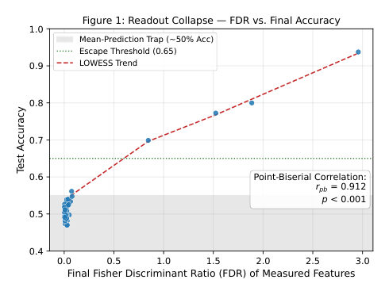
<figcaption class="paper-figure-caption"><b>Fig 1.</b> FIG. 1. Readout collapse as an optimization trap di- agnostic. Final Fisher discriminant ratio (FDR) of the mea- sured features versus test accuracy for the 4-qubit DRU-PQC across the 50 seeds of the diagnostic-instrumented run (4/50 escapes), an independent seed set from the routing and cur- riculum experiments (Sec. IV). The optimization landscape exhibits a bimodal distribution. Initializations that collapse into the degenerate mean-prediction trap (shaded region at ∼50% accuracy) show FDR collapsing toward zero: the mea- sured features become class-degenerate. Models that map the target geometry (surpassing the 0.65 escape threshold, green dotted line) maintain a non-zero FDR (rpb =...</figcaption>
</figure>
<figure class="paper-figure-card">
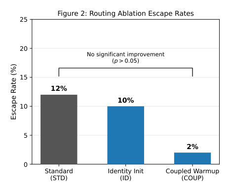
<figcaption class="paper-figure-caption"><b>Fig 2.</b> FIG. 2. Routing ablation interventions fail to mitigate Fourier locking. Comparison of optimizer escape rates from the mean-prediction trap across three distinct routing config- urations (evaluated over 50 independent random initializa- tions). Standard training (STD, 12% escape rate) is com- pared against interventions explicitly designed to pre-align information routing: Identity Initialization (ID, 10%) and Coupled Warmup (COUP, 2%). Neither routing interven- tion yielded a statistically significant improvement over the baseline (p &gt; 0.05, two-sided Fisher’s exact tests); the cou- pled warmup in fact significantly reduced mean final accu- racy (Welch’s t-test, p = 0.020). This confirms...</figcaption>
</figure>
<figure class="paper-figure-card">
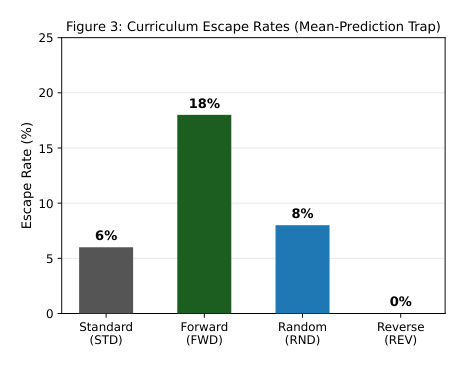
<figcaption class="paper-figure-caption"><b>Fig 3.</b> FIG. 3. Impact of spectral curricula on Fourier lock escape rates. Successful initialization rates (final accuracy &gt; 0.65) across 50 independent seeds for the 4-qubit DRU- PQC under the four matched-compute curricula. Standard training (STD) establishes a 6% baseline escape rate in this seed set. The forward spectral homotopy (FWD) triples the escape rate to 18% by progressively convexifying the loss land- scape during early optimization. Unguided data diversity (labeled as RND) yields no statistical improvement on av- erage (8%; see text for the stratified analysis of its internally drawn orderings), and the reverse curriculum (REV) produces a 0% escape rate, consistent with immediate...</figcaption>
</figure>
<figure class="paper-figure-card">
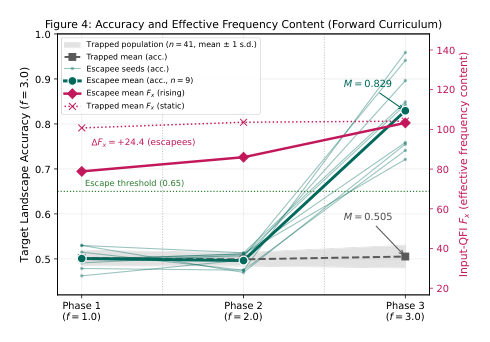
<figcaption class="paper-figure-caption"><b>Fig 4.</b> FIG. 4. The latent scaffold in accuracy and effec- tive frequency content. Target accuracy (f = 3.0, left axis) and input-QFI Fx (right axis) over the 120-epoch for- ward curriculum (FWD), in three 40-epoch spectral phases (f = 1.0 →2.0 →3.0) divided by vertical dashed lines. Ac- curacy of the successful initializations follows a step function: chance through Phases 1–2 (M ≈0.50), indistinguishable in accuracy from trapped runs, then a jump to M = 0.829 at Phase 3. The Fx trajectories separate the populations where accuracy cannot: escapees grow Fx monotonically in step with the curriculum (8 of 9 rising; d = 1.34, p &lt; 0.001), while trapped seeds hold a static effective frequency through-...</figcaption>
</figure>
<figure class="paper-figure-card">
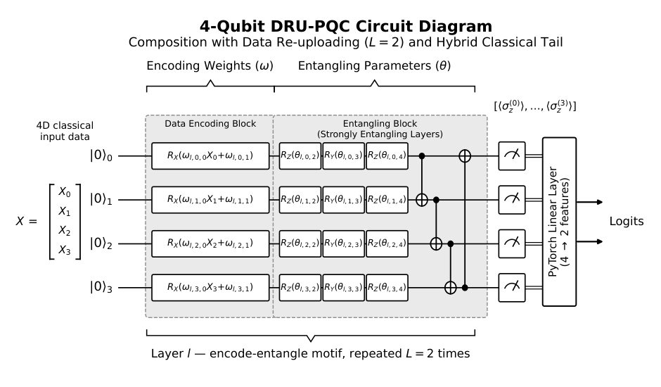
<figcaption class="paper-figure-caption"><b>Fig 5.</b> FIG. 5. Architecture of the 4-qubit DRU-PQC. The classical 4D input X is encoded into the quantum state via Pauli-X rotations (RX) parameterized by trainable encoding weights (ω), which act as frequency selectors. An entangling block of RZRY RZ rotations (θ) and a CNOT ring follows, functioning as signal routers. This encode-entangle motif repeats across L = 2 layers, producing the nonlinear coupling between ω and θ that underlies Fourier locking. The final state is read out via local Pauli-Z expectation values (⟨σz⟩) on all qubits and passed through a classical linear layer to produce binary classification logits.</figcaption>
</figure>
</div>

<p><strong>Summary.</strong> This paper analyzes the optimization challenge of Quantum Data Re-uploading Classifiers, identifying 'Fourier locking' as a spectral misalignment issue rather than simple barren plateaus. The authors propose and demonstrate that solving this requires a frequency-staged homotopy protocol that paces the target frequency during training to guide the quantum state into an optimal regime.</p>
<p><strong>Why it may be interesting.</strong> It provides a concrete physical mechanism (spectral misalignment) for optimization failure in quantum machine learning models, offering a structured, physics-informed protocol (frequency pacing) to guide training away from poor local minima.</p>
<details>
<summary>Detailed structure</summary>
<p><strong>Main problem.</strong> The optimization of Data Re-uploading Parameterized Quantum Circuits (DRU-PQCs) is hindered by 'Fourier locking' (FL), a structural failure mode causing local minima that resist gradient descent.</p>
<p><strong>Main result.</strong> FL is fundamentally a spectral misalignment problem, which can be mitigated by implementing a frequency-staged homotopy protocol that paces the target frequency during training.</p>
<p><strong>Method.</strong> The authors diagnose FL by tracking multiple Fisher diagnostics ($F_x$, FDR) rather than relying solely on gradient magnitudes, and propose solving it via curriculum learning based on frequency pacing.</p>
<p><strong>Model / system.</strong> The model uses 4-qubit DRU-PQCs parameterized by encoding weights ($\omega$) and entangling layers ($   heta$). The circuit structure is fixed, but the optimization difficulty arises from the non-linear coupling between these parameters.</p>
<p><strong>Key observables.</strong> Input-space quantum Fisher information ($F_x$), Fisher discriminant ratio (FDR), and Parameter-space Quantum Fisher Information Matrix (QFIM).</p>
<p><strong>Important parameters / regimes.</strong> Target frequency range ($f: 1.0 	o 3.0$); total trainable parameters $N=50$.</p>
<p><strong>Assumptions / limitations.</strong> The failure is attributed to spectral misalignment rather than a loss of geometric sensitivity, which is confirmed by the QFIM remaining non-degenerate in trapped circuits.</p>
<p><strong>Figures summary.</strong> Figure 5 details the 4-qubit DRU-PQC architecture with encoding and entangling blocks; Table I lists hyperparameters like qubit count (4) and total parameters (50).</p>
<p><strong>Paper structure.</strong> The paper first defines FL using multiple diagnostics, proves that QFIM collapse is not the cause of failure, then introduces spectral homotopy as a remedy by pacing the target frequency, culminating in experimental results showing improved escape rates.</p>
</details>
<details>
<summary>Abstract</summary>
<p>Data re-uploading parameterized quantum circuits (DRU-PQCs) are universal function approximators, yet their expressivity produces oscillatory, non-convex loss landscapes that resist gradient-based optimization. We show that the primary optimization bottleneck in DRU-PQCs is not insufficient capacity but a structural failure mode we term Fourier locking (FL): because encoding weights and entangling layers are nonlinearly coupled, random initialization on high-frequency targets collapses the encoding parameters into spurious local minima. Two Fisher diagnostics characterize FL. The input-space quantum Fisher information $F_x$ measures the effective frequency content of the encoded state; the Fisher discriminant ratio of the measured features measures their alignment with the class labels. In two independent 50-seed experiments, the locking is literal: trapped circuits hold $F_x$ frozen for the entire run, while escaping circuits migrate their frequency content (direct training: $r_{pb} = -0.48$; curriculum: $d = 1.34$; both $p < 0.001$). The replicated signature is this spectral mobility, not any endpoint value of $F_x$, and trapped circuits retain a fully non-degenerate parameter-space QFIM ($r_{pb} \approx 0$): the failure is spectral misalignment of a responsive state, not a loss of geometric sensitivity. A frequency-staged homotopy protocol that paces the target frequency ($f: 1.0 \to 3.0$) convexifies the early loss landscape; escaping circuits raise $F_x$ in step with the curriculum, and the escape rate triples (18% vs. 6%). Fourier locking is a frequency-alignment problem, and its remedy is frequency pacing.</p>
</details>
<p><sub><a href="#top">↑ back to top</a></sub></p>

<p><a id="paper-2607.10510"></a></p>
<h3 id="rigorous-bound-on-the-aspect-ratio-for-the-formation-of-a-nematic-phase-in-hard-rod-and-hard-rectangle-systems-on-math1211math"><a href="http://arxiv.org/abs/2607.10510v1">Rigorous bound on the aspect ratio for the formation of a nematic phase in hard rod and hard rectangle systems on $\mathbb{Z}^2$</a></h3>
<p><strong>Authors:</strong> Qidong He<br>
<strong>Type:</strong> theory · <strong>Category:</strong> statistical mechanics · <strong>PDF:</strong> <a href="https://arxiv.org/pdf/2607.10510v1">https://arxiv.org/pdf/2607.10510v1</a><br>
<strong>Analysis basis:</strong> full PDF text, analyzed in chunks
<strong>Topic relevance:</strong> <code>Keldysh / 2PI / non-Gaussian methods</code> <strong>1/5</strong> · <code>methods for driven-dissipative</code> <strong>1/5</strong></p>
<div class="figure-strip-hint">↔ Scroll figures horizontally</div>
<div class="paper-figures-scroll">
<figure class="paper-figure-card">
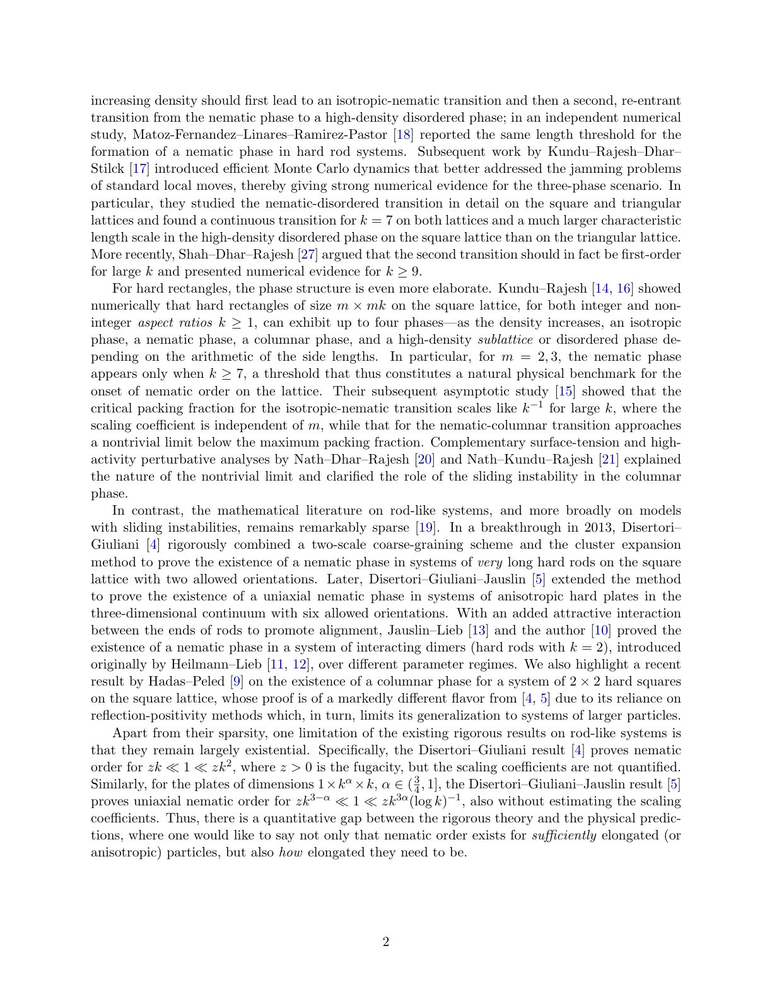
<figcaption class="paper-figure-caption"><b>Fig 1.</b> Low-resolution page preview, page 2</figcaption>
</figure>
<figure class="paper-figure-card">
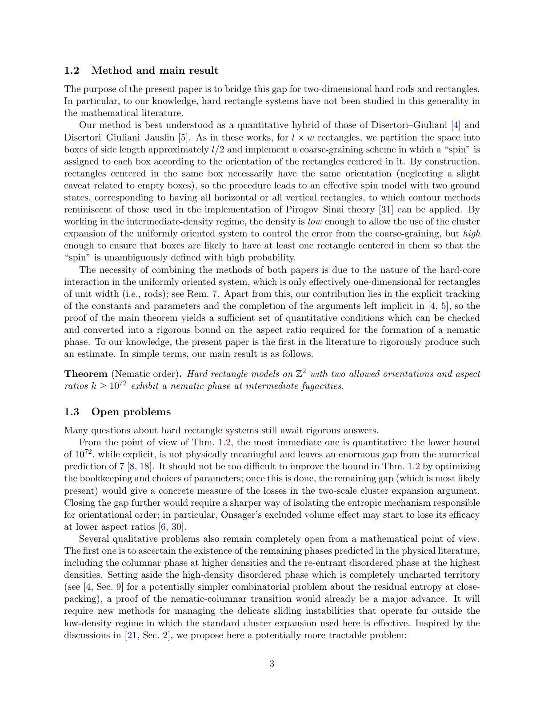
<figcaption class="paper-figure-caption"><b>Fig 2.</b> Low-resolution page preview, page 3</figcaption>
</figure>
<figure class="paper-figure-card">
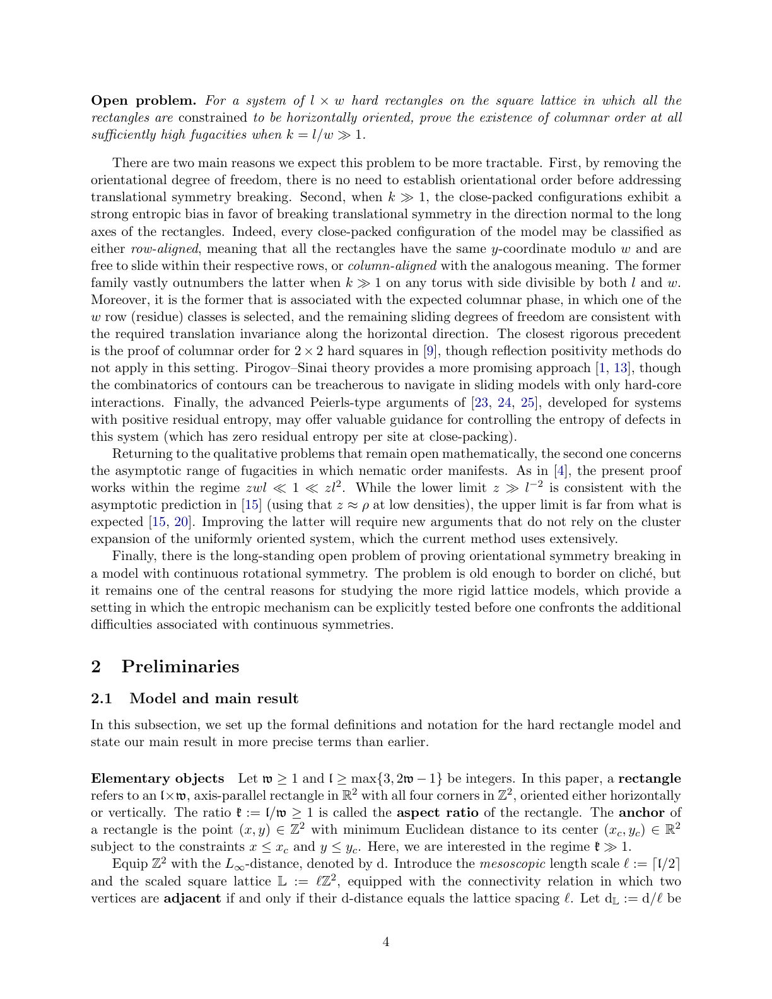
<figcaption class="paper-figure-caption"><b>Fig 3.</b> Low-resolution page preview, page 4</figcaption>
</figure>
<figure class="paper-figure-card">
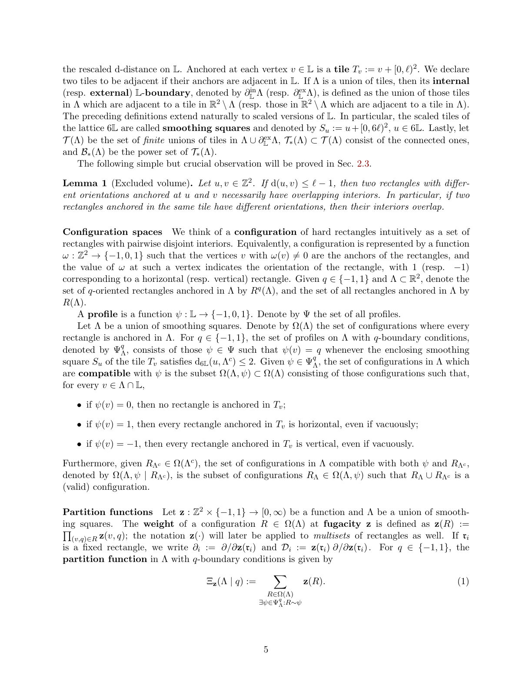
<figcaption class="paper-figure-caption"><b>Fig 4.</b> Low-resolution page preview, page 5</figcaption>
</figure>
<figure class="paper-figure-card">
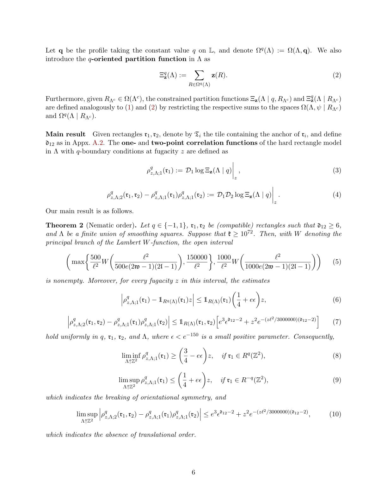
<figcaption class="paper-figure-caption"><b>Fig 5.</b> Low-resolution page preview, page 6</figcaption>
</figure>
</div>

<p><strong>Summary.</strong> This paper provides a mathematically rigorous proof for the existence of a nematic phase in hard rectangle systems on a lattice by establishing a lower bound on the required aspect ratio ($k=l/w$). It achieves this using sophisticated cluster expansion methods and correlation function analysis, offering a significant theoretical advance despite yielding an overly conservative numerical estimate.</p>
<p><strong>Why it may be interesting.</strong> While focused on classical statistical mechanics models (hard shapes), the rigorous bounding techniques and use of advanced cluster expansions are highly relevant to understanding phase transitions in quantum many-body systems where mean-field approximations fail.</p>
<details>
<summary>Detailed structure</summary>
<p><strong>Main problem.</strong> The primary goal is to derive a rigorous, quantitative bound on the aspect ratio ($k=l/w$) required for hard rod and hard rectangle systems on the 2D lattice ($\mathbb{Z}^2$) to exhibit a nematic phase.</p>
<p><strong>Main result.</strong> The authors provide a proof establishing the existence of a nematic phase for sufficiently large aspect ratios, yielding a rigorous lower bound (e.g., $k \ge 10^{72}$), although this vastly overshoots numerical estimates ($k_{\min}=7$).</p>
<p><strong>Method.</strong> The proof employs advanced mathematical techniques including two-scale cluster expansion methods, contour integration reminiscent of Pirogov–Sinai theory, and rigorous bounding of correlation functions.</p>
<p><strong>Model / system.</strong> The system consists of hard rectangles (size $l 	imes w$) placed on the square lattice ($\mathbb{Z}^2$), restricted to two allowed orientations. The analysis focuses on the phase transition into a nematic state as the aspect ratio $k=l/w$ increases.</p>
<p><strong>Key observables.</strong> One- and two-point correlation functions ($
ho_{q, z, \Lambda; 1}$ and $
ho_{q, z, \Lambda; 2}$), which are used to diagnose orientational symmetry breaking (nematic order) and translational order.</p>
<p><strong>Important parameters / regimes.</strong> Aspect ratio $k=l/w$, fugacity ($z$), packing fraction ($\phi$), and lattice parameters ($l, w$). The analysis is most applicable in the intermediate-density regime $    ext{zwl} \ll 1 \ll z l^2$.</p>
<p><strong>Assumptions / limitations.</strong> The rigorous bounds are contingent upon satisfying a large set of technical convergence and closure conditions derived from cluster expansion theory (e.g., C1 through C20).</p>
<p><strong>Figures summary.</strong> Not specified in the notes, but the analysis relies on bounding exponential terms related to correlation functions using various lemmas and properties.</p>
<p><strong>Paper structure.</strong> The paper builds by first establishing the mathematical framework using cluster expansions for polymer partition functions. It then applies this machinery to derive bounds on correlation functions that diagnose symmetry breaking, culminating in a complex set of conditions whose satisfaction yields the final aspect ratio bound.</p>
</details>
<details>
<summary>Abstract</summary>
<p>We prove the existence of a nematic phase in a model of $l\times w$ hard rectangles on the square lattice with two allowed orientations and a large aspect ratio $k:=l/w$. The proof is based on a two-scale cluster expansion method developed previously by Disertori--Giuliani for hard rods in 2D and Disertori--Giuliani--Jauslin for hard plates in 3D. Our main contributions lie in explicitly tracking the constants and parameters and completing the arguments left implicit in these works. Hence, the proof produces a sufficient set of quantitative conditions from which estimates for the required aspect ratio can be extracted. A non-optimized evaluation of these conditions yields the bound $k\ge 10^{72}$. Although it vastly overshoots the numerical prediction, $k_{\min}=7$, our result appears to be the first rigorous estimate of the aspect ratio required for the formation of a nematic phase in hard rectangle systems.</p>
</details>
<p><sub><a href="#top">↑ back to top</a></sub></p>

<p><a id="paper-2607.10659"></a></p>
<h3 id="security-of-passive-entanglement-based-key-distribution-protocols"><a href="http://arxiv.org/abs/2607.10659v1">Security of passive entanglement-based key distribution protocols</a></h3>
<p><strong>Authors:</strong> Shun Kawakami, Koichi Takasugi, Koji Azuma<br>
<strong>Type:</strong> theory · <strong>Category:</strong> quantum information and computing · <strong>PDF:</strong> <a href="https://arxiv.org/pdf/2607.10659v1">https://arxiv.org/pdf/2607.10659v1</a><br>
<strong>Analysis basis:</strong> full PDF text, analyzed in chunks
<strong>Topic relevance:</strong> <code>entanglement &amp; information structure</code> <strong>1/5</strong> · <code>interference shaping light</code> <strong>1/5</strong></p>
<div class="figure-strip-hint">↔ Scroll figures horizontally</div>
<div class="paper-figures-scroll">
<figure class="paper-figure-card">
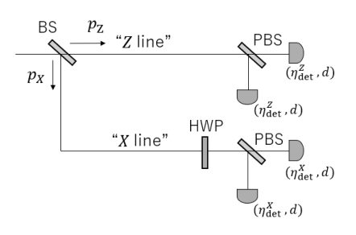
<figcaption class="paper-figure-caption"><b>Fig 1.</b> FIG. 1. Actual setups for passive basis choice with a beam splitter (BS), polarization beam splitters (PBSs), a half wave plate (HWP) and threshold detectors. Incoming light is split into Z line or X line with the ratio of pZ to pX. All detectors have the identical dark count probability d. The quantum efficiencies of detectors in Z line and X line are ηZ det and ηX det, respectively. The overall transmittances, in- cluding the quantum efficiency, in Z line and X line are ηZ and ηX, respectively (ηZ ≥ηX).</figcaption>
</figure>
<figure class="paper-figure-card">
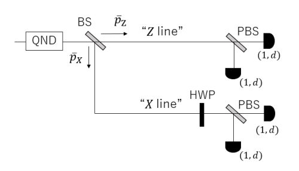
<figcaption class="paper-figure-caption"><b>Fig 2.</b> FIG. 2. Virtual setup equivalent to Fig. 1. The QND measurement of the photon number is performed before the first beam splitter, whose transmittance is ¯pZ = pZ/(pZ + pXr). There is no loss in either the Z or X lines, including detector inefficiencies. The detectors have a dark-count probability d.</figcaption>
</figure>
<figure class="paper-figure-card">
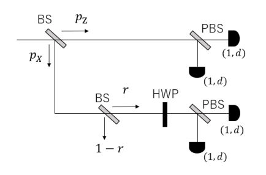
<figcaption class="paper-figure-caption"><b>Fig 3.</b> FIG. 3. Intermediate virtual setup obtained from Fig. 1 by absorbing the common transmittance ηZ into Eve’s quantum channel. The addi- tional loss in the X line, characterized by the transmittance r, remains unchanged.</figcaption>
</figure>
<figure class="paper-figure-card">
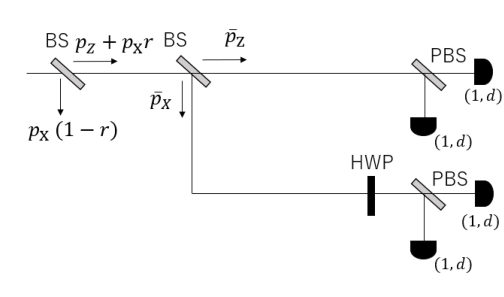
<figcaption class="paper-figure-caption"><b>Fig 4.</b> FIG. 4. Intermediate virtual setup in the derivation of Fig. 2, equiva- lent to Fig. 3. The additional loss in the X line is modeled by a beam splitter with transmittance pZ + pXr placed before the splitting into the Z and X lines. The splitting ratios are chosen to be ¯pZ : ¯pX, yield- ing the same transmittances in the two lines as in Fig. 3.</figcaption>
</figure>
<figure class="paper-figure-card">
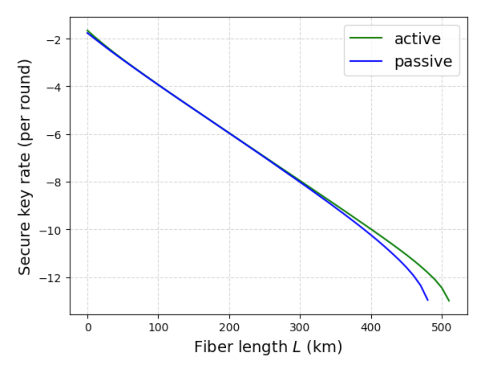
<figcaption class="paper-figure-caption"><b>Fig 5.</b> FIG. 5. Secure key rate per round as a function of the fiber length L between Alice and Bob. The channel transmittance corresponding to source-Alice (or source-Bob) is modeled as ηch = 10−l/50, where the source is placed midway between Alice and Bob (L = 2l), and the overall transmittance is η = ηchηZ det. The detector efficiencies are ηZ det = ηX det = 0.7, the dark count probability is d = 10−7, the de- tector imperfection and misalignment error rate is ed = 0.03, and the error-correction efficiency is 1.16. We optimize the signal in- tensity µ and the basis choice probability pZ at each distance. The blue curve shows the secure key rate R of the proposed protocol with r = ηX/ηZ = 1,...</figcaption>
</figure>
</div>

<p><strong>Summary.</strong> This paper theoretically proves the security of passive entanglement-based quantum key distribution protocols like BBM92. It overcomes the difficulty posed by biased basis choices in real-world setups by developing a virtual-qubit description for the security analysis. The results provide a strong theoretical foundation supporting the practical deployment of these passive quantum communication systems.</p>
<p><strong>Why it may be interesting.</strong> This work provides rigorous theoretical guarantees for practical, passive implementations of quantum cryptography, which is crucial for deploying quantum networks outside controlled lab settings.</p>
<details>
<summary>Detailed structure</summary>
<p><strong>Main problem.</strong> The primary goal is establishing the security of passive entanglement-based key distribution protocols, such as BBM92 and QCKA, particularly when basis choices are biased.</p>
<p><strong>Main result.</strong> The authors successfully prove the asymptotic security for these passive protocols and show that the achievable key generation rate closely matches that of active protocols.</p>
<p><strong>Method.</strong> The security proof employs a 'virtual-qubit description' to reduce the complex passive protocol analysis to techniques analogous to those used in BB84, involving error correction and privacy amplification bounds.</p>
<p><strong>Model / system.</strong> The system models quantum key distribution using polarization states (Z/X bases) transmitted via linear optical setups incorporating beam splitters, PBSs, HWP, and detectors. The analysis is performed asymptotically for the number of repetitions.</p>
<p><strong>Key observables.</strong> Key generation rate ($R$), error rates ($e_Z$, $ar{E}_Z$), and various detection probability ratios ($Q_Z, E_X$).</p>
<p><strong>Important parameters / regimes.</strong> Transmittance asymmetry parameter ($r_B = \eta_X / \eta_Z$), dark-count probability ($d$), and the asymptotic limit of repetitions ($m_{rep} 	o \infty$).</p>
<p><strong>Assumptions / limitations.</strong> Standard security proof techniques are insufficient due to biased basis choice; the analysis assumes lossless Z and X lines after modeling beam splitter effects.</p>
<p><strong>Figures summary.</strong> Figure 1 details the physical setup for passive basis selection using optical components. Other figures illustrate virtual setups used in deriving the alternative protocol equivalent to the actual measurement process.</p>
<p><strong>Paper structure.</strong> The paper establishes the problem, develops the security proof by introducing a virtual-qubit description and bounding phase errors (Lemma 1), derives closed-form expressions for expected values and error rates using generating functions (Appendix D/E), and culminates in the final theorem proving the secure key rate.</p>
</details>
<details>
<summary>Abstract</summary>
<p>Entanglement-based key distribution protocols, such as the Bennett-Brassard-Mermin 1992 (BBM92) protocol and quantum conference key agreement (QCKA), are promising applications of quantum networks. In practical implementations, passive measurement setups are widely adopted because of their simplicity. However, the security analysis of passive protocols with biased basis choice is highly nontrivial, since standard proof techniques for threshold detectors are generally not applicable in this setting. In this work, we establish the security of passive entanglement-based key distribution protocols in the asymptotic regime. Specifically, we prove the security of passive BBM92 with biased basis choice and extend the proof to passive QCKA with an arbitrary number of parties. In addition, we numerically show that the key generation rate of passive BBM92 is almost identical to that of the corresponding active protocol. Our results provide a theoretical foundation for practical passive implementations of entanglement-based key distribution protocols.</p>
</details>
<p><sub><a href="#top">↑ back to top</a></sub></p>

<p><a id="paper-2607.11661"></a></p>
<h3 id="thermal-phase-transitions-in-a-mixed-spin-ising-model-on-the-lieb-lattice-exact-results-beyond-zero-magnetic-field"><a href="http://arxiv.org/abs/2607.11661v1">Thermal phase transitions in a mixed-spin Ising model on the Lieb lattice: Exact results beyond zero magnetic field</a></h3>
<p><strong>Authors:</strong> Jozef Strecka, Katarina Karlova<br>
<strong>Type:</strong> theory · <strong>Category:</strong> statistical mechanics · <strong>PDF:</strong> <a href="https://arxiv.org/pdf/2607.11661v1">https://arxiv.org/pdf/2607.11661v1</a><br>
<strong>Analysis basis:</strong> full PDF text, analyzed in chunks
<strong>Topic relevance:</strong> <code>analog quantum simulation</code> <strong>1/5</strong> · <code>exotic spin models in light-matter</code> <strong>1/5</strong></p>
<div class="figure-strip-hint">↔ Scroll figures horizontally</div>
<div class="paper-figures-scroll">
<figure class="paper-figure-card">
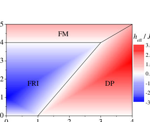
<figcaption class="paper-figure-caption"><b>Fig 1.</b> Figure 3: Zero-temperature density plots of the effective magnetic field heff/J (a) and the effective interaction Jeff/J (b) in the D/J −h/J plane. The solid black lines represent ground-state phase boundaries separating the ferrimagnetic (FRI), disordered (DP), and ferromagnetic (FM) phases.</figcaption>
</figure>
<figure class="paper-figure-card">
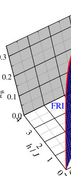
<figcaption class="paper-figure-caption"><b>Fig 2.</b> Figure 4: Global phase diagram of the mixed spin-1/2 and spin-1 Ising model on the Lieb lattice in the three-dimensional parameter space D/J −h/J −kBT/J. The blue dome-shaped surface represents the locus of discontinuous phase transitions separating the ferrimagnetic (FRI) and disordered (DP) phases. A red critical line corresponds to continuous phase transitions between these phases.</figcaption>
</figure>
<figure class="paper-figure-card">
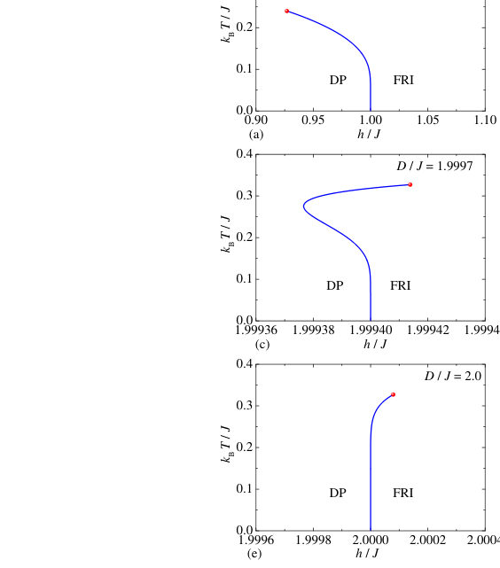
<figcaption class="paper-figure-caption"><b>Fig 3.</b> Figure 5: Representative magnetic-field dependencies of the transition temperature of the mixed spin-1/2 and spin-1 Ising model on the Lieb lattice calculated for six selected values of the uniaxial single-ion anisotropy: (a) D/J = 1.5, (b) D/J = 1.9995, (c) D/J = 1.9997, (d) D/J = 1.9999, (e) D/J = 2.0, and (f) D/J = 2.5. The lines of discontinuous phase transitions separating the ferrimagnetically ordered phase (FRI) from the disordered phase (DP) terminate at Ising-type critical points (red circles).</figcaption>
</figure>
<figure class="paper-figure-card">
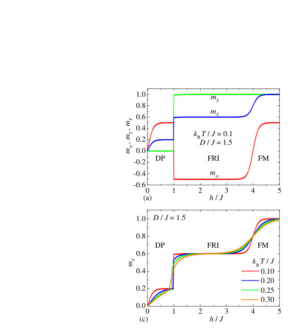
<figcaption class="paper-figure-caption"><b>Fig 4.</b> Figure 6: Isothermal field dependencies of the magnetization and magnetic susceptibility of the mixed spin- 1/2 and spin-1 Ising model on the Lieb lattice as obtained from classical Monte Carlo simulations for the fixed value of the uniaxial single-ion anisotropy D/J = 1.5. The panels (a) and (b) show the single-site magnetization of the nodal (mσ) and decorating (mS ) spins together with the total magnetization (mT ) nor- malized with respect to its saturation value at two selected temperature kBT/J = 0.1 and 0.25. The panels (c) and (d) display the total magnetization and magnetic susceptibility for four selected temperatures.</figcaption>
</figure>
<figure class="paper-figure-card">
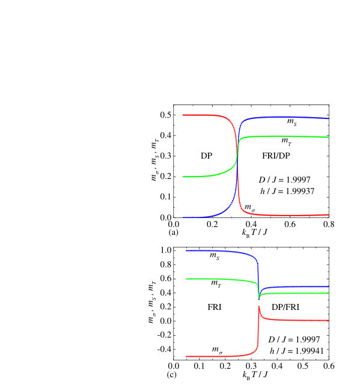
<figcaption class="paper-figure-caption"><b>Fig 5.</b> Figure 7: Temperature dependencies of the local and total magnetization of the mixed spin-1/2 and spin-1 Ising model on the Lieb lattice as obtained from the classical Monte Carlo simulations for the fixed value of the uniaxial single-ion anisotropy D/J = 1.9997 and three selected values of the magnetic field: (a) h/J = 1.99937, (b) h/J = 1.99939,(c) h/J = 1.99941. The panel (d) presents temperature dependence of the total magnetization mT for four representative values of the magnetic field.</figcaption>
</figure>
</div>

<p><strong>Summary.</strong> This work analyzes the phase transitions of a mixed spin-1/2 and spin-1 Ising model on a Lieb lattice using an exact mapping technique. The methodology reduces the complex system to an effective 2D Ising model, enabling analytical predictions for ground states and thermal behavior. Key findings include identifying multiple distinct phases and observing reentrant thermal transitions under specific field conditions.</p>
<p><strong>Why it may be interesting.</strong> The ability to map a complex mixed-spin system onto a solvable 2D Ising model provides powerful analytical tools for understanding frustrated or multi-component magnetic systems relevant in condensed matter physics.</p>
<details>
<summary>Detailed structure</summary>
<p><strong>Main problem.</strong> The study investigates the ground-state and finite-temperature phase transitions of a mixed spin-1/2 and spin-1 Ising model on a Lieb lattice.</p>
<p><strong>Main result.</strong> The system exhibits three distinct ground-state phases (FRI, DP, FM) and displays complex thermal behavior, including dome-shaped surfaces of discontinuous transitions and reentrant $    ext{DP}     o   ext{FRI}    o   ext{DP}$ sequences.</p>
<p><strong>Method.</strong> The authors employ the generalized decoration-iteration transformation to map the mixed-spin model exactly onto an effective spin-1/2 Ising model on a square lattice, allowing for exact analytical solutions.</p>
<p><strong>Model / system.</strong> The system is a mixed spin-1/2 and spin-1 Ising model defined on a decorated square (Lieb) lattice. The Hamiltonian includes nearest-neighbor interactions, uniaxial single-ion anisotropy ($D$), and an external magnetic field ($h$).</p>
<p><strong>Key observables.</strong> Ground state phase boundaries (FRI, DP, FM), critical temperatures, magnetization ($m_\sigma, m_S, m_T$), and susceptibility ($\chi$).</p>
<p><strong>Important parameters / regimes.</strong> Anisotropy ratio ($D/J$) and magnetic field ratio ($h/J$); the analysis focuses on regimes where the effective field $h_{	ext{eff}}$ vanishes.</p>
<p><strong>Assumptions / limitations.</strong> The primary assumption is that the generalized decoration-iteration transformation provides an exact mapping, allowing all thermodynamic properties to be derived from the solvable effective model.</p>
<p><strong>Figures summary.</strong> Figures illustrate the ground-state phase diagram in the $D/J$-$h/J$ plane showing three phases; thermal diagrams show a dome of discontinuous transitions bounded by continuous critical lines; and magnetization plots confirm reentrant behavior across varying magnetic fields.</p>
<p><strong>Paper structure.</strong> The paper first defines the mixed-spin Hamiltonian on the Lieb lattice. It then details the exact mapping via decoration-iteration to an effective square lattice model. Subsequently, it analyzes ground-state phase boundaries and finally explores finite-temperature transitions, identifying continuous critical lines and reentrant discontinuous regimes.</p>
</details>
<details>
<summary>Abstract</summary>
<p>We investigate the ground-state and finite-temperature properties of a mixed spin-1/2 and spin-1 Ising model on a decorated square (Lieb) lattice incorporating a uniaxial single-ion anisotropy and magnetic field. By employing the generalized decoration-iteration transformation, the model is mapped exactly onto an effective spin-1/2 Ising model on the square lattice characterized by an effective nearest-neighbor interaction and an effective field. The studied model consequently becomes exactly solvable even for finite values of the applied magnetic field whenever the effective field vanishes. The ground-state analysis reveals three distinct phases: ferrimagnetic phase (FRI), disordered phase (DP), and ferromagnetic (FM) phase. The ground-state boundary between FRI and DP phases gives rise to a dome-shaped surface of discontinuous thermal phase transitions, which is terminated by a line of Ising-type critical points associated with continuous thermal phase transitions. Both continuous and discontinuous thermal phase transitions belong to the exactly solvable parameter regime defined by a vanishing effective field in spite of the fact that the applied magnetic field is finite. Two consecutive discontinuous thermally-induced reentrant phase transitions DP-FRI-DP are identified in a narrow parameter region. The exact analytical predictions including reentrance, field- and thermally-driven phase transitions are independently verified by classical Monte Carlo simulations.</p>
</details>
<p><sub><a href="#top">↑ back to top</a></sub></p>

<p><a id="paper-2607.09927"></a></p>
<h3 id="transferred-qaoa-parameters-remember-the-penalty-scale-a-math1244math-resonance-law-for-constrained-quantum-optimization"><a href="http://arxiv.org/abs/2607.09927v1">Transferred QAOA Parameters Remember the Penalty Scale: A $λ$-Resonance Law for Constrained Quantum Optimization</a></h3>
<p><strong>Authors:</strong> Krit Grover<br>
<strong>Type:</strong> both · <strong>Category:</strong> quantum information and computing · <strong>PDF:</strong> <a href="https://arxiv.org/pdf/2607.09927v1">https://arxiv.org/pdf/2607.09927v1</a><br>
<strong>Analysis basis:</strong> full PDF text, analyzed in chunks
<strong>Topic relevance:</strong> <code>driven-dissipative phase transition</code> <strong>1/5</strong> · <code>methods for driven-dissipative</code> <strong>1/5</strong></p>
<div class="figure-strip-hint">↔ Scroll figures horizontally</div>
<div class="paper-figures-scroll">
<figure class="paper-figure-card">
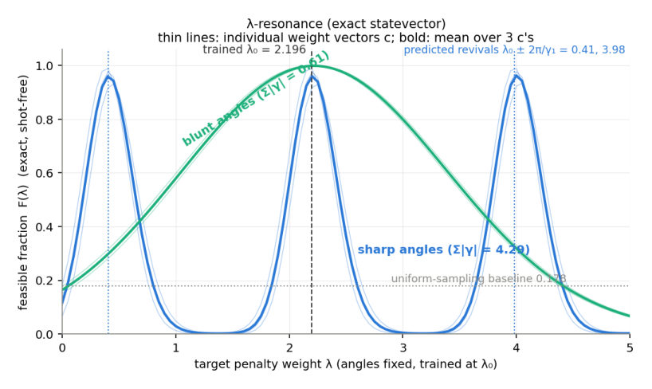
<figcaption class="paper-figure-caption"><b>Fig 1.</b> Figure 1: Exact feasible fraction F(λ) at fixed trained angles on the 20-qubit instance (thin: individual scalarization weights; bold: mean of three). The sharp angle set (P |γ| = 4.29) produces a narrow resonance at the trained λ0 = 2.196 plus both predicted revivals at λ0±2π/γ1 = 0.41, 3.99. The blunt set (P |γ| = 0.61) produces a single wide dome centered on λ0; its first revival (λ0 + 2π/0.537 ≈13.9) lies far outside the window. Dotted horizontal line: uniform-sampling baseline 0.178.</figcaption>
</figure>
<figure class="paper-figure-card">
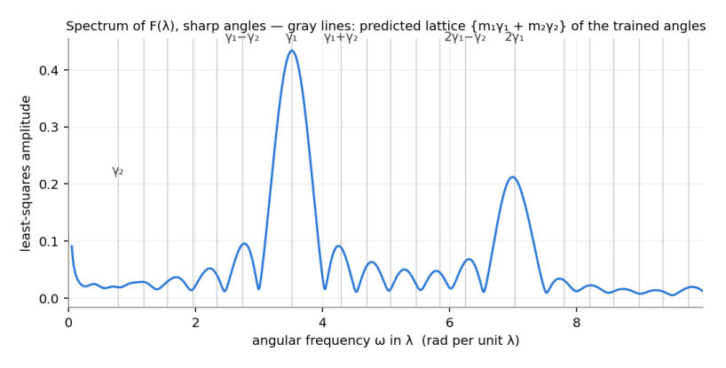
<figcaption class="paper-figure-caption"><b>Fig 2.</b> Figure 2: Least-squares amplitude spectrum of F(λ) (sharp angles, λ ∈[0, 12]). Vertical gray lines: the predicted integer lattice {m1γ1 + m2γ2} of the trained angles. The measured lines sit on the lattice: γ1, 2γ1, γ1 ± γ2, 2γ1 −γ2 are the five strongest.</figcaption>
</figure>
</div>

<p><strong>Summary.</strong> This work develops a mathematical law showing that when using QAOA with penalties, the success of transferring trained parameters depends critically on matching the deployment penalty weight ($\lambda$) to the training weight ($\lambda_0$). The feasibility probability exhibits predictable resonance peaks and spectral fingerprints governed by this phase matching condition.</p>
<p><strong>Why it may be interesting.</strong> The finding reframes a practical failure mode of penalty-based quantum algorithms as predictable phase interference, providing concrete, actionable rules for parameter transfer that rely on understanding the underlying spectral structure rather than just structural similarity.</p>
<details>
<summary>Detailed structure</summary>
<p><strong>Main problem.</strong> The paper investigates how successfully trained parameters from one instance of a constrained optimization problem (encoded via penalties) can be reused on a different, larger instance.</p>
<p><strong>Main result.</strong> Transfer feasibility is governed by a deterministic $\lambda$-resonance law: the probability mass $F(\lambda)$ is a trigonometric polynomial whose structure depends critically on matching the deployment penalty weight ($\lambda$) to the training weight ($\lambda_0$).</p>
<p><strong>Method.</strong> The authors use mathematical analysis involving finite trigonometric polynomials and path expansions over the QAOA ansatz, supplemented by statevector simulations on a 20-qubit QUBO.</p>
<p><strong>Model / system.</strong> The system is the Quantum Approximate Optimization Algorithm (QAOA) applied to Quadratic Unconstrained Binary Optimization (QUBO) problems where constraints are enforced via penalty terms $C_\lambda(x)$.</p>
<p><strong>Key observables.</strong> $F(\lambda)$ (the probability mass on the feasible subspace), resonance width, and revival peaks in $F(\lambda)$ as a function of $\lambda$.</p>
<p><strong>Important parameters / regimes.</strong> The trained angles $(eta, \gamma)$, the penalty weight ($\lambda$), and the maximum violation count ($v_{\max}$).</p>
<p><strong>Assumptions / limitations.</strong> The theorem assumes that the constraint violation count $v(x)$ is an integer-valued quantity.</p>
<p><strong>Figures summary.</strong> Figures illustrate the resonance peak in $F(\lambda)$ for different angle sets, showing a sharp, narrow resonance centered at $\lambda_0$, and spectral analysis confirms frequencies lie on a lattice generated by $\gamma$ parameters.</p>
<p><strong>Paper structure.</strong> The paper establishes that the penalty weight enters only as a phase factor, leading to the $\lambda$-Resonance Theorem. This theorem yields three corollaries regarding resonance peaking, width scaling, and revival peaks, which are then confirmed via statevector experiments on a resource-allocation QUBO.</p>
</details>
<details>
<summary>Abstract</summary>
<p>Training the variational angles of the Quantum Approximate Optimization Algorithm once on a small instance and reusing them on larger ones, known as parameter transfer, is the standard route past the exact-simulation wall. Existing literature explains its success almost entirely through structural similarity. We identify a new, independent axis that governs transfer whenever constraints are encoded as penalties: the trained angles memorize the penalty weight $λ$ of their training instance. For any scalarized cost function with an integer-valued violation count, we prove that at arbitrary fixed QAOA angles $(β,γ)$ of depth $p$, the probability mass $F(λ)$ on the feasible subspace is a finite real trigonometric polynomial in $λ$ whose angular frequencies lie on an integer lattice generated by the trained $γ$'s. Three consequences follow immediately: transfer feasibility is a resonance peaked where the deployment penalty matches the training penalty; the resonance width scales as $1/(v_{max}\sum_k|γ_k|)$, so low-$|γ|$ angle sets are systematically more transferable; and the curve exhibits revival peaks at spacings $2π/γ_k$. We confirm all three predictions by exact statevector experiments on a 20-qubit multi-user resource-allocation QUBO. The theorem is independent of how the angles were obtained and applies to any integer-penalty QUBO, recasting a widely reported failure mode of penalty-based QAOA as deterministic, predictable phase interference rather than an energetic tuning problem.</p>
</details>
<p><sub><a href="#top">↑ back to top</a></sub></p>

<p><a id="paper-2607.11856"></a></p>
<h3 id="trotter-error-compensation-with-polylogarithmic-precision-and-nested-commutator-scaling-without-ancillas"><a href="http://arxiv.org/abs/2607.11856v1">Trotter error compensation with polylogarithmic precision and nested-commutator scaling without ancillas</a></h3>
<p><strong>Authors:</strong> Xinzhao Wang, Shuo Zhou, Ziruo Wang, Pei Zeng, Jinzhao Sun, Qi Zhao, Tom Gur, Tongyang Li<br>
<strong>Type:</strong> theory · <strong>Category:</strong> quantum information and computing · <strong>PDF:</strong> <a href="https://arxiv.org/pdf/2607.11856v1">https://arxiv.org/pdf/2607.11856v1</a><br>
<strong>Analysis basis:</strong> full PDF text, analyzed in chunks
<strong>Topic relevance:</strong> <code>analog quantum simulation</code> <strong>1/5</strong> · <code>non-equilibrium dynamics</code> <strong>1/5</strong></p>
<div class="figure-strip-hint">↔ Scroll figures horizontally</div>
<div class="paper-figures-scroll">
<figure class="paper-figure-card">
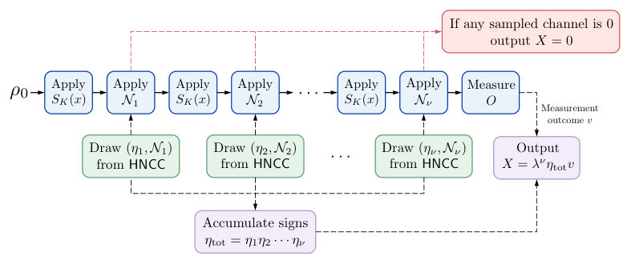
<figcaption class="paper-figure-caption"><b>Fig 1.</b> FIG. 1: One sampled circuit in Algorithm 1. Each segment applies a product-formula step followed by a signed channel sampled by HNCC. The measurement outcome is reweighted by the accumulated sign and λν. If the zero map is sampled, then Xr = 0.</figcaption>
</figure>
<figure class="paper-figure-card">

<figcaption class="paper-figure-caption"><b>Fig 2.</b> FIG. 2: Sampling-routine overview for one HNCC sampling step. The top-level sampler splits the truncated compensation map into the part linear in the BCH generator and the higher-order Taylor terms. Both branches call BCHSample, which in turn calls LCSample to sample a local nested commutator.</figcaption>
</figure>
<figure class="paper-figure-card">

<figcaption class="paper-figure-caption"><b>Fig 3.</b> FIG. 3: Finite-size resource comparison for the periodic Heisenberg chain with N = 10 and t = 1. The three panels show the maximum CNOT count per circuit, the estimated T-gate count per circuit, and the normalized repetition overhead Nrepε2, respectively. S2, S4, and S6 denote the second-, fourth-, and sixth-order Suzuki formulas. RE2-3 and RE4-3 denote three-point Richardson extrapolation based on S2 and S4, respectively. NCC2 and HNCC2 denote NCC and HNCC applied to S2, respectively. For HNCC2, we set q0 = s0 = 6 and require λν HNCC ≤1.75.</figcaption>
</figure>
<figure class="paper-figure-card">

<figcaption class="paper-figure-caption"><b>Fig 4.</b> FIG. 4: Finite-size resource comparison as a function of the simulation time t, with target precision ε = 10−3 and N = 10. The panels show the maximum CNOT count per circuit, the estimated T-gate count per circuit, and the normalized repetition overhead Nrepε2, using the same conventions as in Figure 3.</figcaption>
</figure>
</div>

<p><strong>Summary.</strong> This paper introduces High-Order Nested-Commutator Compensation (HNCC), an advanced technique to improve Hamiltonian simulation accuracy. HNCC compensates Trotter errors at the quantum channel level, achieving polylogarithmic circuit size scaling with precision while avoiding ancillary qubits. It significantly reduces gate counts compared to existing product formula methods for simulating systems like the Heisenberg chain.</p>
<p><strong>Why it may be interesting.</strong> This work directly addresses algorithmic efficiency for simulating quantum dynamics, which is crucial for modeling complex many-body physics in quantum simulators or near-term quantum computers.</p>
<details>
<summary>Detailed structure</summary>
<p><strong>Main problem.</strong> The core problem is efficiently simulating quantum time evolution governed by a Hamiltonian, specifically addressing the polynomial scaling of circuit size with inverse precision inherent in standard product formulas.</p>
<p><strong>Main result.</strong> The proposed High-Order Nested-Commutator Compensation (HNCC) algorithm achieves polylogarithmic dependence on precision ($\epsilon$) for circuit size while maintaining favorable commutator scaling and improving time dependence to match that of a higher-order product formula.</p>
<p><strong>Method.</strong> HNCC compensates Trotter errors at the quantum channel level by approximating the remainder using nested commutators derived from a truncated Baker–Campbell–Hausdorff expansion, implemented via Pauli-rotation channels without ancillary qubits.</p>
<p><strong>Model / system.</strong> The method applies to general $k$-local Hamiltonians on $N$ qubits, simulating time evolution $U(t) = e^{-itH}$. Specific resource estimates are provided for the periodic Heisenberg chain.</p>
<p><strong>Key observables.</strong> Gate count (CNOT/T-gate), circuit size scaling with $\epsilon$, and the achievable order of time dependence matching product formulas.</p>
<p><strong>Important parameters / regimes.</strong> Precision ($\epsilon$), total simulation time ($t$), number of qubits ($N$), locality ($k$), and Hamiltonian terms ($\Gamma$).</p>
<p><strong>Assumptions / limitations.</strong> The method relies on truncating the BCH series at a controlled order $q_0 = O(K + \log(1/\epsilon))$ and assumes efficient computation of connected-cluster preprocessing.</p>
<p><strong>Figures summary.</strong> Figures compare HNCC against other methods (Suzuki, Richardson Extrapolation) showing significant reductions in CNOT/T-gate counts per circuit for the Heisenberg chain.</p>
<p><strong>Paper structure.</strong> The paper introduces the limitations of current product formulas, details the mathematical framework using BCH expansion and LCQC representation, presents the HNCC algorithm, and concludes with resource estimates comparing it to state-of-the-art methods on a physical model like the Heisenberg chain.</p>
</details>
<details>
<summary>Abstract</summary>
<p>Product formulas are among the most practical approaches to Hamiltonian simulation, requiring no ancillary qubits and exhibiting error bounds governed by nested commutators rather than only by Hamiltonian norms. Their circuit size, however, scales polynomially with the inverse precision. We develop a high-order nested-commutator compensation (HNCC) algorithm that preserves the main advantages of product formulas while achieving polylogarithmic precision dependence in the circuit size and the standard $\mathcal{O}(\varepsilon^{-2})$ sampling cost. HNCC uses a truncated Baker--Campbell--Hausdorff expansion to represent high-order Trotter errors by products of nested commutators and compensates these errors at the superoperator level through randomly sampled Pauli-rotation channels, avoiding Hadamard tests and ancillary qubits. For a fixed $K$-th order product formula applied to a $k$-local Hamiltonian on $N$ qubits with $Γ$ Pauli terms and local interaction strength $g_0$, HNCC estimates $\operatorname{tr}[Oe^{-\mathrm{i} tH}ρe^{\mathrm{i} tH}]$ to additive precision $\varepsilon\|O\|$ using $\mathcal{O}(\varepsilon^{-2})$ repetitions and a maximum gate count per circuit of $\mathcal{O}(N^{\frac{2}{2K+1}} (k g_0 t \log(1/\varepsilon))^{1+\frac{1}{2K+1}} k(Γ+\log(1/\varepsilon)))$. The resulting time dependence matches that of a product formula of order $2K+1$. Finite-size resource estimates for the periodic Heisenberg chain indicate that HNCC achieves the lowest CNOT and $T$-gate counts per circuit among the product-formula-based methods considered.</p>
</details>
<p><sub><a href="#top">↑ back to top</a></sub></p>

<p><a id="paper-2607.09924"></a></p>
<h3 id="a-d-electron-route-to-heavy-fermion-like-superconductivity-via-geometrical-frustration"><a href="http://arxiv.org/abs/2607.09924v1">A d-Electron Route to Heavy-Fermion-Like Superconductivity via Geometrical Frustration</a></h3>
<p><strong>Authors:</strong> Chaoguo Wang, Hyeonhu Bae, Jiaqi Tian, Qing-Ping Ding, Yongbin Lee, Yuji Furukawa, Shannon Gould, Brianna R. Billingsley, Si Athena Chen, Matthias Frontzek, Tai Kong, Binghai Yan, Sheng Ran, Xin Gui<br>
<strong>Type:</strong> both · <strong>Category:</strong> strongly correlated electrons · <strong>PDF:</strong> <a href="https://arxiv.org/pdf/2607.09924v1">https://arxiv.org/pdf/2607.09924v1</a><br>
<strong>Analysis basis:</strong> full PDF text, analyzed in chunks
<strong>Topic relevance:</strong> <code>Kondo &amp; dissipative impurity</code> <strong>1/5</strong></p>
<div class="figure-strip-hint">↔ Scroll figures horizontally</div>
<div class="paper-figures-scroll">
<figure class="paper-figure-card">

<figcaption class="paper-figure-caption"><b>Fig 1.</b> Fig. 2d shows the temperature dependence of Knight shift K at the Ga1 site measured by 69Ga NMR.</figcaption>
</figure>
</div>

<p><strong>Summary.</strong> This paper investigates $  ext{Mo}<em 17>4   ext{PtGa}</em>$ to establish a new pathway toward heavy-fermion-like superconductivity in $d$-electron materials. By analyzing magnetic, transport, and superconducting measurements, the authors demonstrate that geometrical frustration within the Mo lattice generates an electronic structure rich in flat bands and singularities. This unique mechanism enhances electron correlations, leading to robust heavy-fermion behavior near a ferromagnetic instability.</p>
<p><strong>Why it may be interesting.</strong> The work provides a concrete example of how lattice geometry (geometrical frustration) can induce strong electronic correlations leading to heavy-fermion behavior using only $d$-orbitals, offering an alternative paradigm for superconductivity research relevant to correlated electron physics.</p>
<details>
<summary>Detailed structure</summary>
<p><strong>Main problem.</strong> The research aims to identify a novel mechanism for achieving heavy-fermion-like superconductivity in $d$-electron materials, moving beyond established models involving f-electrons or CDW physics.</p>
<p><strong>Main result.</strong> The material $ ext{Mo}<em 17>4   ext{PtGa}</em>$ exhibits heavy-fermion-like behavior and superconductivity, attributed to the geometrical frustration of its Mo lattice which generates an enhanced density of states via nearly flat bands.</p>
<p><strong>Method.</strong> A combination of experimental measurements (thermodynamics, transport, NMR) and theoretical calculations (DFT band structure analysis) was employed to characterize the electronic state.</p>
<p><strong>Model / system.</strong> The study focuses on $  ext{Mo}<em 17>4   ext{PtGa}</em>$, an itinerant $d$-electron superconductor featuring a noncentrosymmetric structure and a geometrically frustrated breathing-pyrochlore Mo lattice. The theoretical analysis identifies key features like van Hove singularities derived from Mo-$4d$ states.</p>
<p><strong>Key observables.</strong> Large electronic specific heat coefficient ($\gamma$), high Wilson ratio ($R_W \sim 3.7$), evidence of ferromagnetic spin fluctuations (from $\chi(T)$ and NMR), superconducting gap measurements ($\Delta_1, \Delta_2$), and a coherence length ($\xi \sim 35 	ext{ nm}$).</p>
<p><strong>Important parameters / regimes.</strong> The system operates near a ferromagnetic instability ($Z \sim 0.73$); the superconductivity is characterized by $T_c \approx 0.6 	ext{ K}$ and $\mu_0H_{c2}(0)$ dominated by orbital pair breaking.</p>
<p><strong>Assumptions / limitations.</strong> The analysis assumes that the observed heavy-fermion behavior and superconducting properties are intrinsically linked to the electronic structure generated by the geometrically frustrated lattice, rather than solely relying on f-electron physics.</p>
<p><strong>Figures summary.</strong> Figures illustrate the crystal structure (pyrochlore lattice), temperature dependence of magnetic susceptibility ($\chi(T)$) showing a maximum at $\sim 30 	ext{ K}$, specific heat ($C_p$) confirming electronic contributions, and NMR/Knight shift data tracking spin fluctuations.</p>
<p><strong>Paper structure.</strong> The paper systematically presents evidence: first establishing the material's structure and magnetic susceptibility; second, using transport ($
ho(T)$) and thermodynamic measurements to confirm heavy-fermion characteristics; third, detailing superconducting properties ($H_{c2}$, gap structure); and finally, linking these findings theoretically to the role of geometrical frustration in $d$-electron systems.</p>
</details>
<details>
<summary>Abstract</summary>
<p>Heavy-fermion superconductors are mostly associated with f-electron materials with Kondo lattices, while known d-electron heavy-fermion-like systems are often linked to orbital-selective local moments, Hund-metal physics, or a charge-density-wave mechanism. Here we report Mo4PtGa17, a noncentrosymmetric itinerant d-electron superconductor with a geometrically frustrated breathing-pyrochlore Mo lattice. Thermodynamic, transport and NMR measurements reveal heavy-fermion-like behavior superconductivity and enhanced ferromagnetic spin fluctuations near a ferromagnetic instability. Theoretical calculations identify nearly flat bands, van Hove singularities and Kramers nodal lines near the Fermi energy, derived intrinsically from Mo-4d states and are robust against on-site electronic correlations. These results suggest that the geometrically frustrated lattice in Mo4PtGa17 generates an intriguing electronic structure that enhances the density of states, spin susceptibility and quasiparticle mass. Mo4PtGa17 therefore identifies a unique route to heavy-fermion-like superconductivity in d-electron materials through geometrical frustration. It also allows further investigations into superconductivity emerging from a correlated and spin-fluctuating state.</p>
</details>
<p><sub><a href="#top">↑ back to top</a></sub></p>

<p><a id="paper-2607.10347"></a></p>
<h3 id="a-framework-for-managing-the-models-of-engineered-quantum-systems"><a href="http://arxiv.org/abs/2607.10347v1">A Framework for Managing the Models of Engineered Quantum Systems</a></h3>
<p><strong>Authors:</strong> Siyuan Ji, Hayato Ishida, Amal Elsokary, Stephen Powley, Catherine White, Alexandre Zagoskin, Ran Wei, Maria Aslam, Michael J. de C. Henshaw<br>
<strong>Type:</strong> theory · <strong>Category:</strong> quantum information and computing · <strong>PDF:</strong> <a href="https://arxiv.org/pdf/2607.10347v1">https://arxiv.org/pdf/2607.10347v1</a><br>
<strong>Analysis basis:</strong> full PDF text, analyzed in chunks
<strong>Topic relevance:</strong> <code>methods for driven-dissipative</code> <strong>1/5</strong></p>
<div class="figure-strip-hint">↔ Scroll figures horizontally</div>
<div class="paper-figures-scroll">
<figure class="paper-figure-card">

<figcaption class="paper-figure-caption"><b>Fig 1.</b> Figure 1: The Quantum Systems Model Management (QSysMM) Framework.</figcaption>
</figure>
</div>

<p><strong>Summary.</strong> This paper introduces the Quantum Systems Model Management (QSysMM) Framework to solve the problem of maintaining consistency across heterogeneous models describing engineered quantum systems. It argues that standard model synchronization fails because it cannot track the loss of quantum information like entanglement during abstraction. The framework formalizes this management using four concerns and proposes a language, QSysML, to enforce physical admissibility checks throughout the modeling lifecycle.</p>
<p><strong>Why it may be interesting.</strong> It provides a rigorous, model-theoretic approach to managing complexity in quantum hardware development by formalizing how physical constraints must govern software/engineering abstractions, which is crucial for scaling up quantum devices.</p>
<details>
<summary>Detailed structure</summary>
<p><strong>Main problem.</strong> Existing model synchronization approaches are insufficient for engineered quantum systems because standard transformations can discard crucial quantum content like superposition and entanglement while structural checks remain valid.</p>
<p><strong>Main result.</strong> The paper proposes the Quantum Systems Model Management (QSysMM) Framework to guide the construction and synchronization of quantum system models into a digital single source of truth.</p>
<p><strong>Method.</strong> It introduces QSysML, built on SysML v2, which structures model management around four concerns: ontological, abstraction, composition, and exposure, enforcing physical admissibility checks during transformations.</p>
<p><strong>Model / system.</strong> The framework addresses heterogeneous models describing engineered quantum systems, such as superconducting transmon qubits, integrating inputs from physics (Hamiltonians), engineering specs ($T_1, T_2$), software (Qiskit objects), and systems control layers.</p>
<p><strong>Key observables.</strong> Consistency across domain boundaries; tracing physical properties back to the underlying physics; failure rates under different noise assumptions.</p>
<p><strong>Important parameters / regimes.</strong> Superposition, entanglement, $T_1 = 50 \mu s$, $T_2 = 30 \mu s$, drive frequency (e.g., $5.2 	ext{ GHz}$), error rate thresholds ($< 10^{-3}$).</p>
<p><strong>Assumptions / limitations.</strong> Standard structural checks are insufficient for quantum consistency; the framework must enforce physical admissibility beyond mere structural compatibility.</p>
<p><strong>Figures summary.</strong> Figure 1 depicts the QSysMM Framework structure, showing how the four concerns (Ontological, Abstraction, Composition, Exposure) interact to form consistent viewpoints over a federated model. Table 1 illustrates descriptions of a transmon qubit from multiple semantic domains.</p>
<p><strong>Paper structure.</strong> The paper identifies the failure modes of current synchronization methods for quantum systems and then details the QSysMM framework, defining its four core concerns (Ontological, Abstraction, Composition, Exposure) and proposing QSysML as its implementation language.</p>
</details>
<details>
<summary>Abstract</summary>
<p>Quantum technologies are maturing into systems that classical engineering must build, verify and maintain. The model-driven community has begun to respond with quantum-aware pipelines and languages, and the domain models these produce must be synchronised with the heterogeneous models created and owned by other communities. We argue that existing synchronisation approaches are insufficient for engineered quantum systems. A quantum system description captures superposition and entanglement, which a model transformation could remove undetected, while every structural check passes. To address this, we present the Quantum Systems Model Management (QSysMM) Framework, which guides the construction and synchronisation of the models of a quantum system into a digital single source of truth. The framework features four concerns: ontological, abstraction, composition and exposure, each given the treatment that engineered quantum systems require. Within this framework, we propose a Quantum Systems Modelling Language (QSysML) on the SysML v2 technology stack, and we close with a proposal that matures this synchronisation core into full model management for quantum systems.</p>
</details>
<p><sub><a href="#top">↑ back to top</a></sub></p>

<p><a id="paper-2607.09893"></a></p>
<h3 id="an-end-to-end-hybrid-quantum-classical-sampling-workflow-for-discrete-markov-random-fields-a-reproducible-case-study"><a href="http://arxiv.org/abs/2607.09893v1">An End-to-End Hybrid Quantum--Classical Sampling Workflow for Discrete Markov Random Fields: A Reproducible Case Study</a></h3>
<p><strong>Authors:</strong> Arul Rhik Mazumder<br>
<strong>Type:</strong> both · <strong>Category:</strong> numerical methods · <strong>PDF:</strong> <a href="https://arxiv.org/pdf/2607.09893v1">https://arxiv.org/pdf/2607.09893v1</a><br>
<strong>Analysis basis:</strong> full PDF text, analyzed in chunks
<strong>Topic relevance:</strong> <code>methods for driven-dissipative</code> <strong>1/5</strong></p>
<div class="figure-strip-hint">↔ Scroll figures horizontally</div>
<div class="paper-figures-scroll">
<figure class="paper-figure-card">

<figcaption class="paper-figure-caption"><b>Fig 1.</b> Fig. 1. Experiment D: ESS ratio bar chart across all 60 instances, grouped by graph family, for single-site Gibbs, block Gibbs, and tuned-block Gibbs baselines. The ESS advantage is largest on bottleneck topologies (barbell, barbell-path) where Gibbs mixing is slowest. Tuned-block Gibbs substantially reduces the advantage (mean 1.82×) but does not eliminate it. Source: paper_table_metrics.json.</figcaption>
</figure>
<figure class="paper-figure-card">

<figcaption class="paper-figure-caption"><b>Fig 2.</b> Fig. 2. Experiment D: ESS ratio (Quantum/Single-Site Gibbs) vs. mixing-difficulty proxy across 60 instances and 5 graph families. R2 = 0.00036, slope=0.688: family/topology effects dominate a sin- gle spectral-gap predictor. Mean ratio 16.35, range [8.24, 30.31]. Source: paper_table_metrics.json.</figcaption>
</figure>
<figure class="paper-figure-card">

<figcaption class="paper-figure-caption"><b>Fig 3.</b> Fig. 3. Experiment B: VQC fidelity and compression ratio across n ∈ {6, . . . , 14} (source: reviewer_metrics.json), using the unconstrained depth-3 ansatz of Table VI, not the fixed-budget ansatz of Table IV. Compression grows from 1.8× at n = 6 to 195× at n = 14 at fixed depth d = 3, while fidelity plateaus near 0.44–0.49 for n ≥10, highlighting the fundamental tension between compression and approximation quality.</figcaption>
</figure>
<figure class="paper-figure-card">

<figcaption class="paper-figure-caption"><b>Fig 4.</b> Fig. 4. Experiment A2: ∆F = Fclique −Flinear vs graph density across 36 matched (family, n, seed) instances (4 families × 3 sizes × 3 seeds). R2 = 0.0007, slope= −2.62 × 10−4: no detectable positive correlation between graph density and clique-entanglement benefit at n ≤14. Source: entanglement_sweep.json.</figcaption>
</figure>
<figure class="paper-figure-card">

<figcaption class="paper-figure-caption"><b>Fig 5.</b> Fig. 5. Experiment A1: fidelity vs. n by entanglement strategy (linear, clique, full) across graph families. Clique-minus-linear mean ∆F = −2.28 × 10−4; full-minus-linear mean = +2.58 × 10−3.</figcaption>
</figure>
</div>

<p><strong>Summary.</strong> This paper rigorously benchmarks various sampling techniques—quantum amplitude encoding, VQC, and advanced classical MCMC—for estimating distributions from discrete Markov Random Fields. It finds that while quantum approaches show high theoretical ESS ratios, practical wall-clock comparisons reveal that state-of-the-art classical methods often match or exceed the performance when preprocessing costs are accounted for. The study concludes by cautioning against using shallow VQCs due to poor fidelity relative to established tensor network methods like MPS.</p>
<p><strong>Why it may be interesting.</strong> This work is highly relevant as it benchmarks the feasibility of using near-term quantum hardware for complex statistical inference problems common in condensed matter physics (e.g., phase transitions modeled by MRFs). The detailed benchmarking against classical state-of-the-art methods provides crucial guidance on when and how quantum resources might offer an advantage.</p>
<details>
<summary>Detailed structure</summary>
<p><strong>Main problem.</strong> The core problem is developing an efficient, scalable workflow for sampling from discrete Markov Random Fields (MRFs), which involves overcoming the exponential complexity associated with calculating partition functions.</p>
<p><strong>Main result.</strong> While quantum amplitude encoding shows high Effective Sample Size (ESS) ratios compared to some classical samplers, advanced classical methods like inverse-CDF sampling significantly outperform it in wall-clock time when preprocessing costs are amortized. Furthermore, shallow Variational Quantum Circuits (VQC) were shown to underperform Matrix Product States (MPS) for approximating the distribution.</p>
<p><strong>Method.</strong> The work compares quantum amplitude encoding and VQC approaches against classical MCMC samplers (Gibbs variants, Parallel Tempering) and exact sampling techniques on MRFs.</p>
<p><strong>Model / system.</strong> The system is a discrete Markov Random Field defined over an undirected graph structure. The target probability distribution $P_{	heta}(\mathbf{x})$ is derived from the diagonal of a Hamiltonian, leading to $2^n$ amplitudes that must be sampled.</p>
<p><strong>Key observables.</strong> Effective Sample Size (ESS) ratios, wall-clock ESS/s rates, Fidelity ($F$), Total Variation ($    ext{TV}$), and KL divergence ($D_{KL}$).</p>
<p><strong>Important parameters / regimes.</strong> System size $n$ (up to 40 for MPS scaling), bond dimension $\chi$, and compression ratio.</p>
<p><strong>Assumptions / limitations.</strong> The comparison assumes that the classical preprocessing cost of $O(2^n)$ is amortized across all comparable methods, and VQC results are limited by shallow hardware-efficient ansätze.</p>
<p><strong>Figures summary.</strong> Tables compare ESS ratios (Table I) showing quantum advantage narrowing as baselines improve; Table II compares wall-clock rates; Tables IV/IX show fidelity comparisons between VQC and MPS at increasing system sizes $n$.</p>
<p><strong>Paper structure.</strong> The paper first establishes the difficulty of MRF sampling, then details amplitude encoding for small $n$ against classical MCMC. It proceeds to compare quantum vs. classical efficiency (ESS ratios), analyzes scaling limits using MPS fidelity, and concludes with a direct comparison showing VQC limitations relative to MPS.</p>
</details>
<details>
<summary>Abstract</summary>
<p>Sampling from discrete Markov random fields (MRFs) is a hard problem. We study amplitude-encoded i.i.d. sampling for small MRFs where $2^n$ target probabilities are precomputed classically. This removes quantum exponential speedup but allows a clean comparison against classical MCMC based on independent circuit samples ($τ\approx 1$). Across 60 instances spanning five graph families (1k-step burn-in, 3k retained samples), the mean ESS ratios of Quantum to Single-Site Gibbs, Block Gibbs, Tuned-Block, and Parallel Tempering are $16.35$, $7.29$, $1.82$, and $1.79$, showing modern classical samplers substantially close this gap. Amortizing $O(2^n)$ preprocessing into wall-clock time, exact inverse-CDF sampling yields $17.7\text{M}$ ESS/s versus $488\text{K}$ ESS/s for the quantum sampler ($36\times$ mean rate, $153\times$ per-instance), confirming no wall-clock advantage. We characterize MCMC autocorrelation costs and benchmark amplitude-encoded state preparation at $n \in \{8,10,12\}$. An MPS scaling study ($n \le 40$) shows bond dimension $χ=32$ achieves $F=0.721\pm0.059$ at $n=40$. Finally, a matched-budget VQC vs. MPS comparison at $n \in \{8,10,12\}$ shows VQC fidelities fall far below MPS: $(F_{\mathrm{VQC}}, F_{\mathrm{MPS}}) = (0.31, 0.99), (0.21, 0.96), (0.17, 0.88)$ at compressions $10.7\times$, $34.1\times$, and $113.8\times$.</p>
</details>
<p><sub><a href="#top">↑ back to top</a></sub></p>

<p><a id="paper-2607.10772"></a></p>
<h3 id="demonstrating-quadratic-monte-carlo-speedup-via-quantum-amplitude-estimation-nuclear-engineering-examples"><a href="http://arxiv.org/abs/2607.10772v1">Demonstrating Quadratic Monte Carlo Speedup via Quantum Amplitude Estimation: Nuclear Engineering Examples</a></h3>
<p><strong>Authors:</strong> Jilang Miao, Miaomiao Jin, Akira Sone<br>
<strong>Type:</strong> theory · <strong>Category:</strong> quantum information and computing · <strong>PDF:</strong> <a href="https://arxiv.org/pdf/2607.10772v1">https://arxiv.org/pdf/2607.10772v1</a><br>
<strong>Analysis basis:</strong> full PDF text, analyzed in chunks
<strong>Topic relevance:</strong> <code>methods for driven-dissipative</code> <strong>1/5</strong></p>
<div class="figure-strip-hint">↔ Scroll figures horizontally</div>
<div class="paper-figures-scroll">
<figure class="paper-figure-card">

<figcaption class="paper-figure-caption"><b>Fig 1.</b> Fig. 1. QPE circuit for the ¯ν estimation problem, m = 4 ancilla qubits (QPE register, top) and n = 3 system qubits (bottom, including ancilla). State prep A loads P(ν) via an Ry tree and f(ν) via controlled Ry rotations on the ancilla; controlled-Q2k</figcaption>
</figure>
<figure class="paper-figure-card">

<figcaption class="paper-figure-caption"><b>Fig 2.</b> Fig. 3. Squared error in ˆµ for the U-238 resonance integral. Axes and line styles as in Fig. 2; red squares use the eigende- composition simulation with 8192 shots (mode of ˆy) per m. At m = 14 (T = 16,383), ˆIR = 120.65 b vs. true 120.69 b (0.03% error).</figcaption>
</figure>
<figure class="paper-figure-card">

<figcaption class="paper-figure-caption"><b>Fig 3.</b> Fig. 2. Squared error vs. oracle calls T (QAE, red top axis) and sample count N (classical MC, blue bottom axis). Red squares: Qiskit circuit runs (m = 2–16); for each m, 8192 shots are taken and the mode of ˆy is decoded via Eq. (2). Solid red: analytical mode error (infinite-shots limit). Dashed red: QAE bound (3). Blue circles: empirical MSE; blue line: σ2 f /N.</figcaption>
</figure>
</div>

<p><strong>Summary.</strong> This paper demonstrates the quadratic speedup offered by Quantum Amplitude Estimation (QAE) for calculating expectation values relevant to nuclear engineering, such as fission yields and resonance integrals. By implementing QAE using QPE circuits on toy models, the authors show that the error decreases quadratically with the number of quantum calls ($T$), significantly outperforming classical Monte Carlo methods. This work validates a key quantum computational advantage in a critical area of applied physics.</p>
<p><strong>Why it may be interesting.</strong> This work provides a concrete demonstration of quantum algorithm utility in a highly specialized domain (nuclear physics), showing how fundamental quantum speedups can translate into solving critical industrial simulation problems.</p>
<details>
<summary>Detailed structure</summary>
<p><strong>Main problem.</strong> The primary goal is to overcome the statistical bottleneck inherent in classical Monte Carlo methods used for calculating expectation values in complex physics simulations.</p>
<p><strong>Main result.</strong> The study successfully demonstrates that Quantum Amplitude Estimation (QAE) provides a quadratic speedup, achieving an error scaling of $O(1/T^2)$ compared to the classical $O(1/\sqrt{N})$ scaling.</p>
<p><strong>Method.</strong> The authors employ QAE, implemented via Quantum Phase Estimation (QPE), to estimate expectation values by encoding both probability and scoring functions into a unitary operator. This quantum approach coherently amplifies the desired value rather than relying on repeated measurements.</p>
<p><strong>Model / system.</strong> The methods are applied to two nuclear engineering problems: calculating the mean fission neutron yield ($ar{
u}$) from a discrete distribution, and determining the U-238 resonance integral ($I_R$) using a Breit-Wigner formula approximation.</p>
<p><strong>Key observables.</strong> Mean Squared Error (MSE) of the estimate ($\hat{\mu}$), which is compared against theoretical scaling laws for both QAE and classical MC.</p>
<p><strong>Important parameters / regimes.</strong> The number of phase-estimation qubits ($m$) determines the oracle cost $T=2^{m-1}$; the resonance integral calculation used up to $m=14$ qubits.</p>
<p><strong>Assumptions / limitations.</strong> For large system sizes (e.g., $>9$ qubits), simulating the full state preparation circuit is computationally infeasible, necessitating analytical construction of the unitary operator.</p>
<p><strong>Figures summary.</strong> Figure 2 compares the squared error versus oracle calls ($T$) for QAE (red curve) against sample count ($N$) for MC (blue curve), visually confirming the superior quadratic convergence rate of QAE.</p>
<p><strong>Paper structure.</strong> The paper first introduces the problem of statistical bottlenecks in reactor physics. It then details the theoretical framework of QAE using QPE, applying it to a simple discrete yield example ($ar{
u}$). Finally, it extends this methodology to the more complex U-238 resonance integral calculation, comparing results against classical benchmarks.</p>
</details>
<details>
<summary>Abstract</summary>
<p>We demonstrate quantum amplitude estimation (QAE) as a route to quadratic speedup for Monte Carlo-type expectation values in nuclear engineering. Using QPE-based QAE, we study two examples: a discrete fission-neutron-yield expectation and a U-238 resonance integral under a $1/E$ slowing-down spectrum. The toy problem is implemented as a gate-level Qiskit circuit, while the resonance-integral example is simulated through an exact eigendecomposition of the Grover operator to avoid state-preparation decomposition bottlenecks. In both cases, the squared error scales as $O(1/T^2)$ with the number of oracle calls $T$, compared with the classical Monte Carlo scaling $O(1/N)$. For the U-238 example, QAE recovers the resonance integral to approximately $0.03%$ relative error with $m=14$ phase-estimation qubits.</p>
</details>
<p><sub><a href="#top">↑ back to top</a></sub></p>

<p><a id="paper-2607.10058"></a></p>
<h3 id="fast-and-accurate-ai-based-pre-decoders-for-color-codes"><a href="http://arxiv.org/abs/2607.10058v1">Fast and accurate AI-based pre-decoders for color codes</a></h3>
<p><strong>Authors:</strong> Jan Olle, Christopher Chamberland, Muyuan Li, Igor Baratta<br>
<strong>Type:</strong> theory · <strong>Category:</strong> quantum information and computing · <strong>PDF:</strong> <a href="https://arxiv.org/pdf/2607.10058v1">https://arxiv.org/pdf/2607.10058v1</a><br>
<strong>Analysis basis:</strong> full PDF text, analyzed in chunks
<strong>Topic relevance:</strong> <code>methods for driven-dissipative</code> <strong>1/5</strong></p>
<div class="figure-strip-hint">↔ Scroll figures horizontally</div>
<div class="paper-figures-scroll">
<figure class="paper-figure-card">

<figcaption class="paper-figure-caption"><b>Fig 1.</b> FIG. 1. (a) A d = 7 lattice for the triangular color code. Each weight-4 and weight-6 plaquette corresponds to both an X and Z-type stabilizer. Data qubits shown by yellow vertices, with gray vertices corresponding to the ancillas used to measure the stabilizers. Logical representatives for XL, ZL and YL operators correspond to tensor product of X, Z and Y Paulis on data qubits along any of the boundaries of the triangle. (b) Circuit to measure both weight-6 X and Z-type stabilizers. (c) Same as (b) but for weight-4 stabilizers. In (d) and (e), we show the circuits used for red and green weight-four stabilizers which maintains the regular grid tilling of all qubits.</figcaption>
</figure>
<figure class="paper-figure-card">

<figcaption class="paper-figure-caption"><b>Fig 2.</b> FIG. 2. Comparison between a vanilla decoding algorithm and a decoding algorithm that uses a pre-decoder to pre- process the error syndromes. When using a pre-decoder, the pre-decoder receives the error syndrome from the QPU and applies spacelike and timelike corrections across all syndrome measurement rounds that were used as inputs. The new error syndrome obtained from the corrections are then passed to an algorithmic decoder to apply the final set of corrections. Figure taken from Ref. [31].</figcaption>
</figure>
<figure class="paper-figure-card">

<figcaption class="paper-figure-caption"><b>Fig 3.</b> FIG. 3. (a) Illustration of the fully convolutional neural network architecture used to train our pre-decoders. The input data is labeled trainX and the output data labeled trainY. We use three-dimensional convolutional layers which can have varying kernel sizes and number of filters. The output of the last convolution layer goes through a sigmoid activation function in order to generate the spacelike and timelike predictions. Figure taken from Ref. [31]. (b) Alternative architecture which uses Bottleneck blocks taken from Refs. [37, 38]. We find that such architectures achieves lower LERs while using less parameters compared to the fully three-dimensional convolutional architecture with...</figcaption>
</figure>
<figure class="paper-figure-card">

<figcaption class="paper-figure-caption"><b>Fig 4.</b> FIG. 4. (a) Illustration of the mapping of the triangular color code to a two-dimensional grid. Vertical red lines are added to each data qubit at the bottom of the triangle. For each weight-4 and weight-6 stabilizer in between the red lines, data qubits closest to the right-most vertical line are mapped to that line. Similarly, data qubits closest to the left-most vertical line are mapped to that line. Such a mapping results in the figure on the right, resulting in rectangular weight-6 stabilizers and square or triangular weight-4 stabilizers. (b) Illustration of the mapping of stabilizer measurements to data qubit positions. A data qubit circled in red indicates that a stabilizer...</figcaption>
</figure>
<figure class="paper-figure-card">

<figcaption class="paper-figure-caption"><b>Fig 5.</b> FIG. 5. Example illustration of S1(X) ⊕S2(X) computations used in Algorithm 1 for various fault mechanisms. Only pure timelike failures (which arise from measurement errors) and space-time failures (for instance CNOT gate failures) result in a non-zero value of S1(X) ⊕S2(X). The examples provided are for failures arising in the bulk of the color code lattice. The illustration uses a single ancilla for simplicity to focus on just X-type stabilizers, but the methods apply in the same way to the circuit in Fig. 1.</figcaption>
</figure>
</div>

<p><strong>Summary.</strong> This paper introduces AI-based pre-decoders designed to speed up and improve the accuracy of quantum error correction for color codes. By performing local syndrome corrections using neural networks before a global decoder runs, the method significantly reduces both logical failure rates and computational runtimes compared to existing techniques. This brings color codes closer to practical implementation in large-scale fault-tolerant quantum computers.</p>
<p><strong>Why it may be interesting.</strong> This work directly addresses scalability in quantum computation by proposing a machine learning component to accelerate error correction decoding for topological codes, which is highly relevant to building fault-tolerant quantum hardware.</p>
<details>
<summary>Detailed structure</summary>
<p><strong>Main problem.</strong> The primary goal is to improve the performance of quantum error correction for color codes by developing fast and accurate AI-based pre-decoders.</p>
<p><strong>Main result.</strong> The proposed AI-based pre-decoder combined with a global decoder significantly improves both the logical failure rate (by factors up to 347x) and reduces the decoding runtime (by factors up to 7.33x) compared to using the global decoder alone.</p>
<p><strong>Method.</strong> The authors introduce local, AI-based pre-decoders—implemented via novel neural network architectures—that perform spacelike and timelike syndrome corrections before passing processed syndromes to a standard global decoder like Chromobius.</p>
<p><strong>Model / system.</strong> The work focuses on color codes, specifically triangular color codes, as fault-tolerant alternatives to surface codes for quantum computation. The decoding process involves mapping stabilizer measurements onto a 2D grid suitable for CNN input.</p>
<p><strong>Key observables.</strong> Logical failure rates (LERs), decoding runtimes ($\mu s$/round), and the speedup factor relative to raw Chromobius decoding.</p>
<p><strong>Important parameters / regimes.</strong> Code distance ($d$), physical error rate ($p$, e.g., 0.3%), and the specific neural network model used for pre-decoding.</p>
<p><strong>Assumptions / limitations.</strong> The pre-decoder is probabilistic and local, meaning residual errors are passed to the global decoder; performance improvements scale with code distance.</p>
<p><strong>Figures summary.</strong> Figures illustrate the lattice structure of color codes, compare decoding pipelines (vanilla vs. pre-decoder assisted), detail CNN architectures used, and show the mapping of stabilizers onto a rectangular grid for training data generation.</p>
<p><strong>Paper structure.</strong> The paper introduces the problem of slow color code decoding, proposes the local AI pre-decoder concept compatible with parallel schemes, details the novel neural network architecture and data preparation methods, and finally presents quantitative results comparing performance metrics (LERs and runtimes) against baseline decoders across varying parameters.</p>
</details>
<details>
<summary>Abstract</summary>
<p>Color codes are promising alternatives to surface codes for universal fault-tolerant quantum computing due to their simpler lattice-surgery protocols and the transversal implementation of logical Clifford gates. However, their practical deployment has been limited by slower decoding algorithms and worse logical failure rates and thresholds compared to surface codes. Although AI-based logical-flip decoders have recently been proposed to address these challenges, no clear framework currently exists for implementing such decoders within the parallel block-wise decoding schemes in both space and time required for large-scale fault-tolerant computation. AI-based pre-decoders offer a scalable alternative due to their local nature. By performing spacelike corrections on physical qubits and timelike corrections on stabilizer measurements, pre-decoders are naturally compatible with parallel block-wise decoding schemes and lattice-surgery protocols. In this work, we introduce AI-based pre-decoders for triangular color codes. We present a novel neural-network architecture for their implementation and develop methods to simplify the complex training data generated by color-code syndrome-extraction circuits containing feedforward operations. Remarkably, we find that both logical failure rates (LERs) and runtimes improve relative to raw Chromobius decoding as the code distance increases. For example, at code distance d=31 and physical error rate $p=0.3\%$, our pre-decoder + Chromobius pipeline improves the logical failure rate by a factor of 347x while reducing runtime by 7.33x compared to raw Chromobius decoding alone. These results demonstrate that AI-based pre-decoding can substantially narrow the performance gap between color codes and surface codes, bringing color codes closer to practical large-scale fault-tolerant quantum computation.</p>
</details>
<p><sub><a href="#top">↑ back to top</a></sub></p>

<p><a id="paper-2607.11713"></a></p>
<h3 id="quantum-arithmetic-circuits-in-public-key-cryptography"><a href="http://arxiv.org/abs/2607.11713v1">Quantum Arithmetic Circuits in Public-Key Cryptography</a></h3>
<p><strong>Authors:</strong> Siyi Wang, Kyungbae Jang, Hyunji Kim, Anik Basu Bhaumik, Anubhab Baksi, Hwajeong Seo, Anupam Chattopadhyay<br>
<strong>Type:</strong> theory · <strong>Category:</strong> quantum information and computing · <strong>PDF:</strong> <a href="https://arxiv.org/pdf/2607.11713v1">https://arxiv.org/pdf/2607.11713v1</a><br>
<strong>Analysis basis:</strong> full PDF text, analyzed in chunks
<strong>Topic relevance:</strong> <code>quantum measurements</code> <strong>1/5</strong></p>
<div class="figure-strip-hint">↔ Scroll figures horizontally</div>
<div class="paper-figures-scroll">
<figure class="paper-figure-card">

<figcaption class="paper-figure-caption"><b>Fig 1.</b> Fig. 3. Structures of n-bit Quantum Subtractor.Anubhab: We can redraw these dia- grams in tikz</figcaption>
</figure>
</div>

<p><strong>Summary.</strong> This paper provides a detailed review of optimizing quantum arithmetic circuits essential for attacking public-key cryptography. It compares various circuit designs for addition and multiplication, emphasizing resource trade-offs between methods like measurement-based uncomputation and using conditionally clean ancillas. The work is crucial for making realistic evaluations of quantum cryptanalytic capabilities.</p>
<p><strong>Why it may be interesting.</strong> While focused on cryptography, the deep dive into resource optimization (depth vs. qubit count) using advanced quantum control techniques like MBU is highly relevant to building any large-scale quantum simulator or device.</p>
<details>
<summary>Detailed structure</summary>
<p><strong>Main problem.</strong> The core challenge is designing quantum arithmetic circuits that are resource-efficient enough to execute large-scale public-key cryptanalysis algorithms like Shor's algorithm.</p>
<p><strong>Main result.</strong> The paper reviews state-of-the-art optimization strategies, such as measurement-based uncomputation and using conditionally clean ancilla qubits, for fundamental operations like addition and modular exponentiation.</p>
<p><strong>Method.</strong> It involves a comprehensive review of various quantum adder/multiplier architectures (e.g., ripple-carry vs. carry-lookahead) and analyzing resource metrics to improve circuit depth and qubit count.</p>
<p><strong>Model / system.</strong> The model is general quantum computation using qubits, focusing on implementing arithmetic operations within the Clifford+T gate set for fault tolerance in cryptanalysis contexts.</p>
<p><strong>Key observables.</strong> Toffoli-Depth, Toffoli-Count, Qubit-Count (Space Complexity), and T-gate count are key metrics used to evaluate circuit efficiency.</p>
<p><strong>Important parameters / regimes.</strong> The required bit length of the integers being processed (e.g., 2048 bits for RSA) dictates the scale and resource requirements of the circuits.</p>
<p><strong>Assumptions / limitations.</strong> The design assumes a focus on fault-tolerant computation, often relying on Clifford+T gate sets; specific techniques like MBU introduce measurement overheads.</p>
<p><strong>Figures summary.</strong> Figures illustrate concepts like single-qubit Measurement-based Uncomputation and comparisons between Clean Ancilla vs. Conditionally Clean Ancilla designs for quantum gates.</p>
<p><strong>Paper structure.</strong> The paper is structured as a review, first establishing the necessity of arithmetic circuits for cryptanalysis, then detailing optimization techniques (MBU, ancillas), followed by reviewing specific circuit implementations for addition, multiplication, and modular exponentiation.</p>
</details>
<details>
<summary>Abstract</summary>
<p>Quantum computing has advanced rapidly in recent decades, driven by developments across the technology stack, including quantum error-correcting codes and efficient quantum algorithms. Among these, quantum arithmetic circuits serve as fundamental building blocks for various promising algorithms. Despite their crucial role, the design of quantum arithmetic circuits faces challenges arising from the no-cloning theorem, qubit limitations, and circuit depth constraints, which significantly impact the efficiency of large-scale quantum computing. We provide an overview of quantum arithmetic circuits in the context of public-key cryptanalysis, with particular emphasis on optimization strategies such as measurement-based uncomputation and conditionally clean ancilla. We review state-of-the-art designs for essential arithmetic operations in public-key cryptanalysis such as addition, multiplication, and modular exponentiation. We also present an overview of the techniques used for fault-tolerant runtime and resource estimation in quantum cryptanalysis. In brief, this chapter emphasizes strategies for designing resource-efficient quantum arithmetic circuits, providing a basis for realistic evaluations of quantum cryptanalytic capabilities.</p>
</details>
<p><sub><a href="#top">↑ back to top</a></sub></p>

<p><a id="paper-2607.09997"></a></p>
<h3 id="scalar-and-vector-bosons-in-a-bonnor-melvin-math1369math-spacetime-an-exact-duffin-kemmer-petiau-analysis"><a href="http://arxiv.org/abs/2607.09997v1">Scalar and vector bosons in a Bonnor-Melvin-$Λ$ spacetime: an exact Duffin-Kemmer-Petiau analysis</a></h3>
<p><strong>Authors:</strong> Francisco A. Cruz Neto, Luis B. Castro<br>
<strong>Type:</strong> theory · <strong>Category:</strong> other · <strong>PDF:</strong> <a href="https://arxiv.org/pdf/2607.09997v1">https://arxiv.org/pdf/2607.09997v1</a><br>
<strong>Analysis basis:</strong> full PDF text, analyzed in chunks
<strong>Topic relevance:</strong> <code>Keldysh / 2PI / non-Gaussian methods</code> <strong>1/5</strong></p>
<div class="figure-strip-hint">↔ Scroll figures horizontally</div>
<div class="paper-figures-scroll">
<figure class="paper-figure-card">

<figcaption class="paper-figure-caption"><b>Fig 1.</b> Fig. 1: Scalar effective potential in the dimensionless variable x = ar for representative values of ν.</figcaption>
</figure>
<figure class="paper-figure-card">

<figcaption class="paper-figure-caption"><b>Fig 2.</b> Fig. 2: Representative scalar radial profiles in the di- mensionless variable x = ar, for ν = 1. (a) Nor- malized radial eigenfunctions Rn(x) for n = 0, 1. (b) Corresponding normalized radial charge-density pro- files ρn(x), defined in Eq. (101).</figcaption>
</figure>
<figure class="paper-figure-card">

<figcaption class="paper-figure-caption"><b>Fig 3.</b> Fig. 3: Effective potentials for the transverse circular polarizations in the dimensionless variable x = ar, for representative values of b. (a) s = +1. (b) s = −1.</figcaption>
</figure>
<figure class="paper-figure-card">

<figcaption class="paper-figure-caption"><b>Fig 4.</b> Fig. 4: Representative transverse radial profiles in the dimensionless variable x = ar, for b = 2 and n = 0. (a) Normalized radial eigenfunctions w+,0(x) and w−,0(x). (b) Corresponding normalized radial charge-density profiles ρ+,0(x) and ρ−,0(x), defined in Eq. (150).</figcaption>
</figure>
</div>

<p><strong>Summary.</strong> This paper provides an exact quantum treatment of scalar and vector bosons moving in a specific curved spacetime (Bonnor-Melvin-$\Lambda$) using the Duffin-Kemmer-Petiau formalism. By rigorously analyzing the radial equations, the authors demonstrate that all physical modes possess purely discrete energy spectra. This work offers a significant improvement over previous approximations by incorporating the full global geometric structure of the background.</p>
<p><strong>Why it may be interesting.</strong> While not directly about AMO systems, the methodology of solving wave equations in curved backgrounds using exact spectral methods and identifying confinement mechanisms is highly relevant for quantum field theory in curved spacetime, which underpins many advanced topics in quantum optics and gravitational physics.</p>
<details>
<summary>Detailed structure</summary>
<p><strong>Main problem.</strong> To provide a unified, exact treatment of scalar and vector bosons propagating in the curved Bonnor-Melvin-$\Lambda$ spacetime background.</p>
<p><strong>Main result.</strong> The analysis yields purely discrete radial spectra for all physical sectors (scalar, longitudinal, transverse) by solving singular Sturm-Liouville problems derived from the DKP formalism.</p>
<p><strong>Method.</strong> The authors use Umezawa's projection operators to reduce the Duffin-Kemmer-Petiau equation into separate second-order equations for spin-0 and spin-1 components, which are then solved using techniques leading to hypergeometric functions.</p>
<p><strong>Model / system.</strong> The system involves scalar ($\phi$) and vector ($W_\mu$) bosons propagating in a Bonnor-Melvin-$\Lambda$ spacetime. The dynamics are governed by the DKP formalism, yielding effective Klein-Gordon and Proca equations in curved spacetime.</p>
<p><strong>Key observables.</strong> Purely discrete radial spectra (eigenvalues $\epsilon^2, \epsilon_s^2$) for all physical modes; conserved currents ($J_\mu$).</p>
<p><strong>Important parameters / regimes.</strong> The cosmological constant ($\Lambda$); the background geometry parameters defining the metric function $S(r)$.</p>
<p><strong>Assumptions / limitations.</strong> The analysis avoids the conical approximation, working directly in the full curved spacetime. The radial dynamics are treated as a singular Sturm-Liouville problem on fundamental intervals.</p>
<p><strong>Paper structure.</strong> The paper first establishes the DKP formalism and projection operators for the given background. It then derives the second-order equations for the scalar and vector sectors, leading to radial equations that are solved by mapping them to known solvable forms (Pöschl-Teller/Hypergeometric). Finally, the quantization conditions yield the discrete spectra.</p>
</details>
<details>
<summary>Abstract</summary>
<p>We study scalar and vector bosons in the Bonnor--Melvin--$Λ$ spacetime within the Duffin--Kemmer--Petiau (DKP) formalism. By employing Umezawa's projection operators, we separate the physical spin-0 and spin-1 sectors and derive the corresponding exact second-order equations in the full curved spacetime, without relying on the conical approximation. For the scalar sector, the radial equation reduces to a Schrödinger-like equation with a trigonometric Pöschl--Teller effective potential. In the vector sector, the longitudinal mode is governed by the same effective potential, whereas the transverse polarizations are described by generalized trigonometric Pöschl--Teller potentials. Because the me-tric function vanishes at a discrete set of radial points, the radial dynamics is naturally formulated as a singular Sturm--Liouville problem on a fundamental interval, with the physical radial domain fixed by the Friedrichs self-adjoint extension of the corresponding singular radial operators. As a result, all physical sectors exhibit purely discrete radial spectra, and their eigenfunctions are obtained in closed form. These results provide a unified exact treatment of scalar and vector bosons in the Bonnor--Melvin--$Λ$ spacetime, complement previous analyses based on the conical approximation, and clarify the role of the global geometric structure of the background in shaping confinement and spectral properties.</p>
</details>
<p><sub><a href="#top">↑ back to top</a></sub></p>
<hr>
<p>
<a href="index.html">← Index</a>
 · <a href="papers_06.html">← Previous</a> · <a href="papers_08.html">Next →</a>
</p>
<hr>

</body>
</html>
